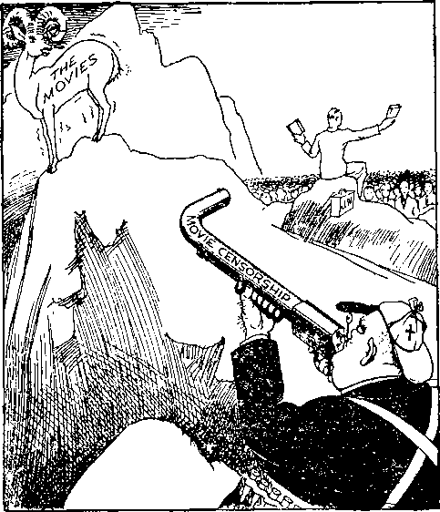
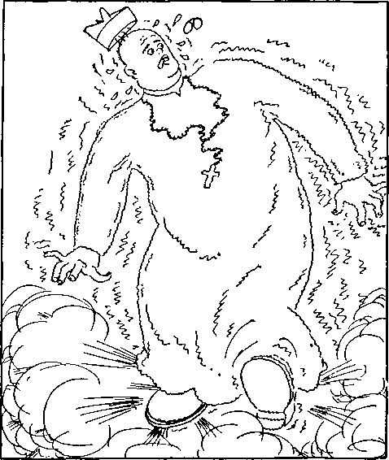

A JOURNAL OF FACT HOPE AND COURAGE
iiiiiiiiiimiiiiimimiiiiiiiiiiiiiiimiiiiiiiiiiiiiiiiiiiiiiiiiiiiiiiiiiiii
in this issue
INTERNATIONAL MURDERERS -THE SUPER-GANGSTERS OF "CHRISTENDOM”
(Part 2)
CONSPIRACY AT PHILADELPHIA
LOYALTY
KINGDOM PUBLISHERS
AROUND THE WORLD
RANSOM AND VINDICATION
iiiiiiiiiiiiiiiiiiiiimiimiiiiiiiiiiiiiiiiiiiiiiiiiiiiiiiiiiiiiiiiiiiiiiiiiii
every other WEDNES DAY
five cents a copy one dollar a year Canada & Foreign 1.25
Vol. XVII-No. 443 September 9, 1936
♦•cXq).
-
SOCIAL AND EDUCATIONAL
The Conspiracy at Philadelphia
Death Sentence for Drug Addicts
FINANCE—COMMERCE—TRANSPORTATION
Betting Rid of Some Dirty Food
POLITICAL—DOMESTIC AND FOREIGN
I n t i :i: n a tion a l M urderers—
The Super-Gangsters of
Sacrifices of Italian People 773 Hierarchy in High Feather 775 Ethiopians Never Had a Chance 779 Italian Atrocities in Tripoli 780
Curious Support of Malefactors 788
Perspiration in Northern Rhodesia 788
---------------------------------.gxa-.
Getting Ready for Japanese War
AGRICULTURE AND HUSBANDRY
Artificial Germination of Wheat
HOME AND HEALTH
Let the Serum Worshipers Explain 784
Have the Hatters Been in Persia? 794
Water Scarce in Central Australia 795
TRAVEL AND MISCELLANY
Peacock Throne to Be Sold for Junk 794
Cannibalism on Malekula Island
RELIGION AND PHILOSOPHY
Alabama Baptists Join Inquisition
False Christianity Makes Crooks
Published every other Wednesday by
GOLDEN AGE PUBLISHING COMPANY, INC.
117 Adams Street, Brooklyn, N. U. S. A.
Clayton J. Woodworth President Nathan H. Knorr Tice President
Charles E. Wagner Secretary and Treasurer
FIVE CENTS A COPY
$1 a year, United States ; $1.25 to Canada and all other countries.
Notice to Subscribers
Remittances : For your own safety, remit by postal or express money order. When coin or currency is lost in the ordinary mails, there is no redress. Remittances from countries other than those named below may be made to the Brooklyn office, but only by internauunal postal money order.
Receipt of a new or renewal subscription will be acknowledged only when requested. Notice of expiration is sent with the journal one month before subscription expires. Please renew promptly to avoid los« of copies.
Send change of address direct to us rather than to the post office. Your request should reach us at least two weeks before the date of issue with which it is to take effect. Send your old as well as the new address. Copies will not be forwarded by the post office to your new address unless extra postage is provided by you.
Published also in Bohemian, Danish, Dutch, Finnish, French. German, Greek, Japanese, Norwegian, Polish, Spanish, Swedish.
Offices for Other Countries
British 34 Craven Terrace, London, W. 2, England
Canadian 40 Irwin Avenue, Toronto 5. Ontario, Canada
Australasian 7 Beresford Road, Strathfield, N. S. W., Australia
South African Boston House, Cape Town, South Africa
Entered as second-class matter at Brooklyn, N. Y., under the Act of March 3, 1879.
---_____---
Volume XVII Brooklyn, N.Y., Wednesday, September 9, 1936 Number 443
International Murderers — The Super*Gangsters of “ Christendom ”
(Part 2)
AS A result of business operations in which he caused the murder and betrayal of nobody knows how many men and women, Dutch Schultz had an income in the last six weeks of his life amounting to $827,253; that being the case, he was gladly received into the Roman Catholic fold. He died cursing and swearing, and the Rev. John A. Toomey, Jesuit, was glad to explain how he was entirely acceptable to the Roman Catholic Hierarchy and therefore to God. And The Literary Digest, because, like most other magazines, it loves to grovel before the Hierarchy, was delighted to publish how Dutch had proved that the life of the racketeer is, after all, the only life worth while. It gets everything in this life and everything in the next.
Restorers of the Holy (?) Roman Empire
Most great men have some pattern or ideal before their minds, and their life is bent to the accomplishment of that ideal as nearly as possible. If Dutch had any model to which to work, it should have been something like this:
Munition makers’ lives remind us We can make our lives sublime;
And, departing, leave behind us Footprints on the sands of time.
Where Dutch made his great error as a gangster is that he did not make his alliance with the Roman Catholic Hierarchy earlier. Had he done so and split 50-50 with his spiritual backers, he could have been a power in the United States, as Mussolini is a power in Italy.
That Dutch Schultz was a child of the Devil goes without saying. How about Mussolini? The Reverend W. D. Herrstrom, of Akron, Ohio, in an address at Toronto, Canada, stated that 11 Duce regularly goes into seclusion for hours at a time “and converses with some unknown supernatural forces”. Those unknown supernatural forces are the same as converse with the Roman Catholic Hierarchy. The end which they have in view is the re-establishment of the Holy (?) Roman Empire; hence Cardinal Pacel-li, of Vatican City, refers with great respect to H Duce as “the most cultured restorer of Imperial Rome”.
Mussolini’s talks with devils have not been in vain. They have surely put the thought in this man’s mind that in collusion with the Roman Catholic Hierarchy he will again make Rome mistress of the entire world. The Roman Emperor Augustus was a Fascist. He overawed the Roman people by keeping always, in the “eternal” city, a picked corps of imperial guards. A letter just received from Italy has on it a stamp showing the head of Emperor
Augustus, Mussolini’s ideal. After his death Augustus was numbered among the gods; why not Mussolini ? The five million Italian boys and girls who make up the Balilla scouts are obligated to pray for Mussolini before each meal. In these prayers the children make mention of the fact that Italy has been the “favorite child for centuries”; thus the idea is fostered in the child’s mind of the close union between Mussolini and the ‘deity’.
Victor Emmanuel III, now hailed as emperor of Rome’s revived empire, has Mussolini to thank for his new title. Before the Ethiopian war, it is reported, Mussolini put his finger on a map of Ethiopia and said: “That’s where we start.” That leaves everybody wondering what will be his next point of attack. Incidentally, the cost of conquering Ethiopia is estimated to have been $815,000,000, which Italy could in no way spare, and hundreds of millions more must be expended on the country to make it livable for Europeans—to say nothing at all of the promised “uplifting” of the natives.
Mussolini’s ideal, Augustus, plunged his country into civil war, arranged for his enemies to destroy one another, and then destroyed the survivors himself. Affecting great modesty and moderation he “yielded to the pressing entreaties of the Senate that he should govern the people”. One of his major policies, like that of Mussolini, was “to retain old names and forms”. History says that Augustus was really ruled by his wife and by his vanity. His last act was to call for a mirror and applaud himself as he passed out.
George Seldes’ book Sawdust Caesar denounces Mussolini as an editor who accepted a bribe to help throw Italy to the side of the Allies in the World War; a patriot who fled to Switzerland to avoid military service, and a veteran of the war whose wounds were received when an Italian trench mortar exploded, sending 44 splinters into his hind quarters; a leader of blackshirts who offered their services to both sides in a strike; the conqueror of Corfu with casualties of sixteen children and four unarmed adults; the marcher on Rome, which march was effected comfortably in a sleeping car.
The Buenos Aires Herald reports Cardinal Maffi, of Pisa, as saying of Mussolini, “As a priest I weep; as an Italian I am ashamed”; and then the Herald goes on to say on its own account :
It is indeed one of the most deplorable scandals of our age that the common tramp, schemer, deserter, liar, and seducer, has been permitted to hoodwink the masses by means of the cleverest and most sustained propagandist ‘ramp’ on record.
It is now Mussolini’s claim that he has ten million men under arms, the biggest army any nation has ever seen. In view of this statement, consider what changes have taken place in the mind of this man who is on record as saying, twenty-three years ago:
The nationalist, conservative and clerical Italy of today wants to make the sword her law and the army the school of the nation. We foresaw this moral degeneration and therefore are not surprised by it. But those who believe that this dominance of militarism is a sign of strength are mistaken.
Regarding the tragic death of the nobieminded Matteotti, The Star of India claims that it was the general plan of Mussolini to castrate Matteotti, but that De Bono, who had charge of the devilish work, was careless and the victim bled to death, as is often the case in this inhuman operation.
The story goes that Mussolini chanced to go alone to a movie in a small Italian town. His picture was shown; all stood but himself. The proprietor came, tapped him on the shoulder, and said: “I feel the same as you do, but you had better stand up; it's safer.”
Though it is well known and has been widely published that the pope has taken care of Mussolini’s most pressing financial necessities, yet Italy has been in a bad way financially. It is now some years since the United States was told by Italy that Italy was in no financial position to pay anything on borrowed money, though the prosecution of the Ethiopian war cost $5,000,000 a day, at the very least.
Dr. Giovanni Macerata, writing from Venice, said:
It’s a question of life or death. Italy could not go on with the crisis—1,000,000 idlers, industry and commerce ruined, 50,000 doctors, professors and engineers without any possibility to find a job like me, who cannot find a chair, and I don’t know what to do. Therefore, the war in Africa is a necessity. If we conquer one-half Abyssinia we shall send there in 100 years 5,000,000 Italians.
Whatever the financial necessities of the case, what the Italian government had to do they certainly did. The soldiers were paid less than four cents a day. In many cases they were invited to make voluntary contributions reducing their pay to three cents a day. In six months before the war started 240,000 soldiers and laborers went through the Suez canal, and in three months the canal tolls were ten million dollars.
The munition makers were impartial. The six tanks of latest pattern owned by the Ethiopian emperor, Haile Selassie, and which the Italian soldiers were expected to face, were made in Italy.
While the war was on it was not so much fun to be a financier of any kind in Italy. Carlo Feltinelli, lumber king, died of fright at Milan when he was confronted in court with evidence that he had offered a bribe of 60,000,000 lire to settle claims that the government had against him.
Many months before the outbreak of the war it was known in every part of the earth that Mussolini had decided to take over Ethiopia. About the time he was making his preliminary declarations to this effect, the Standard-Vacuum Oil Company sent Francis W. Rickett to Ethiopia to seek oil concessions. The matter was kept so secret that officials of Socony Vacuum and Standard Oil Company of New Jersey, which two companies own the Standard-Vacuum Oil Company, denied all knowledge of the transactions which had come to a climax at the end of August by their publication to the world. Borah described the whole situation as buying an interest in the Italo-Ethiopian war, then threatening. The storm raised about the incorporation in Delaware of the new Standard Oil brat styled African Exploration Development Company, when it was disclosed that the Ethiopian concession had been granted to it, was so great that John D. Rockefeller, Jr., is believed to have personally interfered, and the deal was called off. Meantime Leo Y. Chertok, former representative of the E. I. du Pont de Nemours Company, one of the world’s largest makers of war munitions, claims to have privately raised $1,000,000 to get similar concessions. A report from Rome stated that Italy would welcome any commercial enterprise of a neutral character undertaken in Ethiopia.
In the months of August and September, 1935, eight times as much oil, crude and refined, was shipped from New Orleans to Italy as went to the same destination in the corresponding months of the previous year.
Before the so-called sanctions went into effect the United States Department of Commerce disclosed that more American motor trucks were being shipped to Eritrea, Italian Africa, than to any other part of the world. Ten days later it was announced that Henry Ford had discontinued sending trucks to Italian Africa, and would send no more until the war was over.
October 1934, exports of iron and steel scrap to Italy, $179,000; October 1935, $454,000. October 1934, shipments of oil to Italy and Italian Africa, $337,000; October 1935, $1,185,000. October 1934, refined copper exports to Italy, $188,000; October 1935, $534,000.
Italians overrunning Ethiopia expressed some disappointment at finding British weapons and munitions in the hands of such Ethiopians as were captured.
Mussolini had to have gold to pay for his war munitions, and so Italian people everywhere were encouraged to give up all their jewelry, even wedding rings, and accept iron rings in their place. In the territory covered by New York, New England and northern New Jersey 100,000 iron rings were given to Italo-American couples who sent their gold rings to Mussolini to help pay the cost of the Ethiopian war. The iron rings were “blessed” by Catholic priests, regardless of how long the couples were married or how many children they had, and then they were married all over again and lived happy ever after, maybe. In Chicago alone 4,000 of these old-timers w’ere remarried in a single day, that is, “renewed their marriage vows.”
Mussolini had to have brass for cartridges, and so American Italians in large numbers sent greetings to their native land printed on sheets of copper and brass, and women sent lipsticks which were in fact nothing less than cartridge shells.
While the war was on Italy had meatless days and heatless schools; a committee of war widows had every home in the land under surveillance and rules; one-fifth of the train service was canceled; 2,500,000 schoolboys received officer training; every one of the 3,646,000 farms was regimented as to what acreage it must plant and what crops must be raised; wages in southern Italy were between four shillings and ten shillings (96c to $2.40) for a week of 60 to 100 hours. On these wages the people could barely exist. In Calabria roads were built by the unemployed at wages of a penny an hour. These unemployed must sign the register daily and agree to take any jobs offered anybody, regardless of whether they have had experience or not. Many soldiers went to Ethiopia as a change from the intolerable conditions at home; but conditions in Ethiopia were still worse.
Two months before the war began 5,000 Italian soldiers suffering from malaria, dysentery and typhoid passed through the canal returning toward Italy. Ten Italian soldiers died every day from the heat. Also, many thousands were sent back as invalids to the Mediterranean region, but were not returned to the mainland of Italy, lest their appearance and their tales should somewhat cool the war fever.
London papers estimated that, to escape being pressed into the war, at least 10,000 Italian deserters found their way into Switzerland, 2,000 into Germany, and 2,000 into Yugoslavia. These men had to flee over dangerous mountain passes in the nighttime, and in the dead of winter, with the certainty that if caught they would be slain. In many instances they were penniless.
The flame of rebellion burned hotly among the 1,000,000 Tyrolese, Croats and Slovenes who came under Italian rule in 1919. It is estimated that 1,500 of these fled over the Austrian border alone, and other large numbers made their’ way into Yugoslavia, Switzerland and France.
In those days it was hard to smile in a land where gasoline was the equivalent of $1.08 a gallon and nobody can afford to run automobiles unless well to do. A tourist returning from Italy was asked his outstanding impression of Borne, and replied, “Nobody laughs or smiles.”
During the war, and perhaps even yet, a university professor of Italy might not visit any foreign country without informing the minister of education two months in advance, so that he might be told what he could say while abroad. Any Italian citizen who circulated anything deemed detrimental to Italian prestige abroad could be punished with imprisonment of from five to twenty-four years. No Italian may even now give out statistics of his country without first submitting them to the Central Institute of Statistics for approval. No public meeting of any kind, for any purpose, may be held without permission of the government secured a month in advance. It is possible, even yet, to arrest a person without a warrant, court-martial him in secret and also put him in jail secretly, so that, to all intents and purposes, he vanishes from sight.
On the island of Ponza there is a prison camp. The 287 there imprisoned were allowed to have some hours each day outside the camp, where they could read or write or think. The privilege was withdrawn. As a result the 287 protested by handing in their permits to leave camp at all. This enraged the prison authorities, so that additions of from four to fourteen months were added to the terms the prisoners must serve. A French wife of one of the prisoners came to inquire as to the fate of her husband. She was about to become a mother, but despite her condition she was knocked down and kicked until, for a month, her own life and that of her unborn child were despaired of.
The 7,000 exiles on the island of Asmara petitioned the government to discontinue their meat rations as long as the “sanctions” of the League continued against Italy. One can imagine the arguments used to get them to make the petition. The very fact that on that little barren island there are 7,000 men cut off from families and friends speaks volumes.
According to the London Daily Herald Dr. Augusto Monti, of Italy, cared for the two small children of a political prisoner. He thereby incurred the hostility of the government and was sentenced to five years’ imprisonment. He is alleged to have courageously said to his Fascist “judge”,
I am ashamed that in a country which boasts of being civilized a person can be accused of being merciful towards two children left alone in their home.
It is claimed that among the Negroes of South Carolina there are some ex-slaves known as Gullahs, who still preserve a number of words of the pure Gullah, Ethiopian, tongue brought here by their ancestors who came in chains in the hold of Boston ships.
It is the theory of the Roman Catholic Hierarchy that the pope is God’s gift to the world (although the papacy is purely an Italian racket and the pope is elected to his job by his fellow politicians in the “religious” business); and it is also the theory of the Roman Catholic Hierarchy that war is God’s gift to the world, because it produces so much human suffering and such an opportunity for the clergy and other grafters to make money by the barrel.
The way the pope helped to finance the Italian war was like this. Millions of Catholics contributed to the papal cause. The money could not go into Italy on account of “sanctions”. Mussolini and the pope made a swap. Mussolini gave the pope Italian money and then took over the contributions (from Germany) in cannons, bombs, machine guns, poison gas or whatever was necessary to carry on the war.
The ‘ ‘ gift ’ ’ and the coming ‘ ‘ recompense ’ ’
Have a laugh. The pope gave Mussolini a “gold” medal to commemorate the re-establishment of the papal temporal power. In due time Mussolini turned over his supposedly solid gold medal to help build up the Italian war chest, but when they came to melt it they discovered it was only gold-plated. One bunko-steerer swindling another is too funny for words.
When the war began all the church bells of Italy rang, including St. Peter’s at Rome. When it was over, and the other Italian church bells rang in celebration of the victory, St. Peter’s bell diplomatically remained silent.
While the war was in progress, many so-called “Protestants”, including the “Most Reverend” Cosmo G. Lang, archbishop of Canterbury, expressed grievous disappointment that “no Christian voice was heard in Italy to remonstrate against the use of barbarous poison gas”. Other and numerous attempts were made to smoke the pope out and get him to discourage the slaughter of the Ethiopians, but all in vain. No pope has ever wanted any war stopped if he could see any way by which the Roman Catholic Hierarchy would profit by its continuance.
A few of the British papers had the courage and the honesty to poke fun at the international hypocrite headquarters. Thus, under the title “Funk Hole in Rome”, Cassandra, in the London Daily Mirror, said: “All’s right with the world. God's in his heaven and the pope’s in his gasproof shelter.” Whom was Cassandra kidding then?
As soon as the defenseless Ethiopians had been conquered the pope hailed it as “a happy triumph for a great and good people”, and thanked “God” for the Italian victory. The Jesuits once had control in Ethiopia, but were expelled. They will now make another attempt at the spiritual subjugation of the Coptic Christians.
Hierarchy in
High Feather
The end of the war was virtually coincident with the pope’s 79th birthday. On that occasion Patrick Car-
dinal Hayes, of New York city, as in duty bound, acclaimed Pope Pius XI as “God’s special gift to the church and the world, during these critical times”, and the pope himself was to have broadcast his acknowledgment of that alleged fact, but, although the electricians put forth their best effort, the static in the air prevented the message from getting through. It will now be for the theologians to explain how the pope could try to get such a man-honoring message through and fail, and Judge Rutherford’s address of February 23, which honored only God and exposed the Roman Catholic Hierarchy as the biggest swindle on earth, went all the way through to Australia in splendid shape, despite the fact that the electricians on the job felt sure it wouldn’t at that hour in the morning, and the program was switched around over the north pole when it was partly finished, without affecting reception at all; and all reception ended when the address itself ended.
The lesser clergy stood behind the pope as he stood behind Mussolini, and the spirit of the big devil and the little devils is manifest in their utterances. Thus Cardinal Pacelli said:
Rome was ordained and prepared by providence to be the capital of the world and the central seat of religion. The Rome of the emperors was a historical preparation for the spiritual and universal empire of Jesus Christ. No city will wrest from Rome its destiny as the city of God.
Bishop Margaria gave up his gold beads and pectoral cross to Mussolini to aid him in winning, and said:
The entire Roman Catholic clergy of Italy had invoked the blessing of God on the Italian troops and prayed constantly for victory.
When the queen of Italy (along with some 10,000,000 other women and men) gave up her wedding ring, the account says, as she dropped that and another ring into the urn in front of the “Unknown Soldier’s"’ tomb “a military archbishop advanced and ‘blessed’ two iron rings” which were given to her in their place. Did you get that—a military archbishop?
The city of Faenza, Italy, gave a “miraculous image of the virgin” to troops going to Ethiopia. The crown prince and princess knelt before it, the archbishop “blessed” it, and thousands of men, women and children marched behind it to the boat; others threw themselves on their knees praying the image for victory.
•‘With the Help of God”
Italian aviators showered their fellow Christians and fellow League members in Ethiopia with the warning that those who opposed the Italians would die, that the safe course was for them to turn traitor, and that the Italian army was blessed by God, meaning that the pope had personally “blessed” Mussolini October 12.
The Italian planes, after burning the faces off many Ethiopians by the use of mustard gas, dropped leaflets over Addis Ababa that shortly “with the help of God” they would occupy the country for civilization. Inasmuch as the pope financed the war, and himself claims to be so much the triple-crowned ruler of heaven, earth and hell that he can even order God himself to come down and be sacrificed, as often as he sees fit, it is plain that when he referred to the “help of God” he meant the god that is mentioned in 2 Corinthians 4:4, the “god of this world”; the same that Jesus referred to as “the prince of this world”, the Devil.
A telegram from the daughter of the emperor of Ethiopia protested against gas attacks by Italian airmen, stating that Ethiopians had no gas masks and were suffering torture beyond description: that hundreds of them were screaming in pain, many of them unrecognizable because the skin was burned off their faces. The Italians covenanted not to use gas attacks. The pope was until recently, and probably still is, a stockholder in a poison-gas factory.
The keen desire of the pope for Ethiopian conquest was manifest in the fact that the only ecclesiastical seminary within the confines of Vatican City is for the education of Ethiopian students for the priesthood. Italy now dominating Ethiopia, the pope confidently expects to take over its whole religious establishment, or rather to retake it, as the Jesuits once had it, before being expelled.
The Abuna, head of the Coptic church of Ethiopia, called world attention to the fact that in an instance where Italian troops were forced to retreat they burned all the churches in the neighborhood as they did so. Manifestly the revived Roman Empire fully intends that Roman architecture shall be manifest in the churches that now, so it is said, dot almost every hill in the country. The Ethiopians referred to their war with Italy as a war between Christians and Catholics.
The Coptic religion, surviving in Ethiopia after 1,600 years, considers every Wednesday, Friday and Sunday a holy day, with some additional ones, at New Year and Easter. Though a great mixture, it still holds to the truth that when Christ died He really died, and did not merely seem to die, as is maintained by the Roman Catholic sect, and other heretical religions. The plain Bible truth on this subject was denounced as heresy by the council of Charleston in the year 450 (A.D.). They were the heretics themselves, and the heresy that Christ when on earth was both human and divine is held today by nearly all who claim to be Christians. It teaches that when Christ died and cried out “My God, my God, why hast thou forsaken me?” He was merely acting a part, and addressing a part of himself which did not die. This is, in truth and in fact, a complete denial of the central truth of the Bible that Christ died for the sins of the world.
Of the principal actors in the Italo-Ethiopian travesty H. Detjen, of Wisconsin, writes, interestingly :
Mussolini, of Italy, is from the home seat of the Roman Hierarchy, the pope claiming to be vicegerent of Christ, and a fit subject to prove to all the world that so-called “Christianity” is a fake. On the other side, the black-skinned man claims to be a direct descendant from King Solomon, son of David; yet Jehovah stated the Kingdom would be taken from Solomon’s line for disobedience, and the title assumed by Haile Selassie, “King of Kings” and “Lion of the tribe of Judah” applies to no man on earth. So neither actor in this fight is a true and faithful witness to the only and omnipotent Creator of heaven and earth, Jehovah God, but both parties in the controversy may be under direct guidance of Gog, the spirit creature set by Satan to destroy every vestige and remembrance of Jesus, the Christ, from among the children of men on earth today.
Romulus and Remus knocking at John Bull’s door
Romulus and Remus, suckled by the wolf, built up Rome in the first place, and the pope and Mussolini are thoroughly imbued with the idea that by the use of Fascism they can do it again. During the war the Italian press, owned body and soul by the Mussolini government, attacked Britain savagely. Thus the paper Tevere said:
The English have made every continent white with human bones, and today, with the cruelest violence, they are continuing to outrage those human rights which they champion at Geneva—but only at Geneva.
During the war a traveler reported that all over Italy he found lawyers, teachers and the common people fully convinced that the British empire is about to be dismembered and that Italy is to take its place in Egypt, Arabia, Iraq, Palestine, Africa, India, and even Australia. The whole country was aflame with the idea, implanted, of course, by the pope's backing of Mussolini, and this view was broadcast all over the East and Near East by the Italian Government.
For a time there were anti-British disorders, smashing British store windows, daubing them with black enamel, forcing hotels to change their names, defacing signs, etc. It was reported that some Italians spat in the faces of some British. If true, it is just as well to study a little history and do a little thinking. British bulldogs are all right as playmates, but once they start in to use their jaws it is not so easy to get along with them. The dispatches that mentioned affronts to the British said also that King Victor Emmanuel approved the war in Ethiopia. Why would he not? He is a Roman Catholic, is he not? And he wishes to do all possible to show his accord with the pope. And, now that the war is over, he is an emperor.
If the League had concluded to use military sanctions against Italy a trained army of 5,941,949 veterans ready for service, together with a trained reserve of 36,456,517 men, would have been available, equipped with 13,917 planes and 1,165 fighting ships, representing the military resources of the 49 nations voting to go along with the League program.
Up to the latter part of May the Ethiopians were still occupying the western part of their country, even though the capital had fallen, but when the League of Nations insisted on letting the Ethiopian representative have his usual place at the council table, Baron Pompei Aloisi, chief of the Italian delegation, rose and with dignity intimated that Ethiopia had ceased to exist and that he did not see how he could spend any of his time sitting up with a corpse. That was not just what he said, but it was what he meant. Incidentally, Ethiopia paid the League of Nations $126,144 and got nothing. When Haile Selassie rose in the League of Nations assembly to insist upon Ethiopian rights the Italian press representatives shouted “Murderer!” and otherwise acted so boisterously as to be forcibly ejected.
When first the Italian troops invaded Ethiopia a great effort was made to swing Ethiopian sentiment around to the side of the invaders. At the fall of Aksum, the so-called “holy city” of Ethiopia, the military forces remained far outside the city, while the priests surrendered. The Italian general kissed the Byzantine cross carried by the head priest. A B.U.P. dispatch from Adow’a to the London Daily Express said:
Everything is being done by the Italians to avoid offending the religious susceptibilities of the people. The Italians know that the Coptic church dreads the spread of Roman Catholicism following the Italian invasion.
Subsequently, when it became perfectly apparent to everybody that the Italians would win their objective, there were scenes of needless butchery such as characterized the slaughter of the fleeing Germans on the morning of November 11, 1918. Edward J. Neil, of the Associated Press, accompanied a squadron of Italian bombing planes over Ethiopia. The dispatch which he sent was, in part, as follows:
Our plane wheeled, dove and thundered at them less than 600 feet from the ground, so close we could see the black men sawing desperately at the reins of their mules. Then Francesco started pulling levers. We dropped twenty-four fifty-one-pounders in clusters, and I saw at least ten strike squarely in the middle of frantic groups. Shattered bodies were easily visible, flying through the air. Pietro radioed headquarters : ‘ ‘ Found thousand quadrupeds at zone indicated. They received our caresses. Estimate 200 Ethiopians killed, 100 animals. Rest fled, demoralized.”
Ethiopians were stirred by tales coming from Adowa, Aksum, Adigrat and Adda Garima that Italian soldiers in captured areas ravished Ethiopian women and girls wholesale, including nuns and priests’ wives; and both Ethiopians and Americans were stirred by Italian bombing of the American Mission Hospital at Dessye. The hospital was marked by a large American flag and red cross, and its location was well known to the Italian consulate and Italian armies. It was the first place in Dessye attacked, although it is far removed from the town. Americans insist the bombing could not have been accidental. Forty-five bombs were dropped on the property, five of which hit the hospital.
Italy justly accuses Ethiopia of barbarities in the castration of prisoners, and then the public press reminds everybody that for centuries prior to 1878 the Roman Catholic Hierarchy caused the castration of 3,500 boys every year because it liked fine music in its choirs. The boys who survived the terrible operation and who did not develop adequate voices were sold to serve as eunuchs in Turkish harems.
There were castrati in the papal choir as late as 1913, and may still be. The practice was carried on for centuries merely to gratify the insufferable vanity of the popes and their enjoyment of high-class music at the expense of many ruined lives.
Referring to the rule of the Amharas in Ethiopia, Lieut. Cyril Rocke, of London, in an open letter to the archbishop of Canterbury, said:
Does your Grace of Canterbury realize that, in Abyssinia, countless little male children are castrated every year to qualify them for the slave market of the ruling race of that fair and unhappy country? The mutilation takes the form of the removal of the child’s testicles by the crudest methods, after which the wounds caused by the act of abscission are cauterized by the application of red-hot irons. The Abyssinian experts who perform this operation do not use anesthetics. This happens to countless unfortunate little children every year, of whom the writer has seen and spoken to a considerable number.
As a ruler Haile Selassie was not all that could be desired. When he went forth to battle he dressed in plain clothes and stayed in the rear, in as safe a place as he could get, but his double, wearing a false beard and carrying a red umbrella, to make him look like a king, was put in the front lines to take the punishment.
Selassie was going to stay in Addis Ababa and be the last man to die, but thought better of it. A British warship carried him to Palestine, along with ten tons of baggage. Part of the baggage was 100 iron-bound boxes, said to contain most of the money of the Ethiopian realm. This report has been vehemently denied.
One would not anticipate a very nice picture of Ethiopia from an Italian, and certainly the state of things there is far from attractive in the 72-page booklet The Last Stronghold of Slavery; What Abyssinia Is, by Prof. G. C. Baravelli, of the Rome University. It seems hard to think of a land where a hand or foot may be cut off for the smallest theft; where a person was hanged for stealing oranges from the larder of the empress; where one-fourth of the inhabitants are slaves; where fresh meat is eaten raw; where fifty thousand lepers are at large; where the only sanitary conveniences are dogs and jackals and hyenas; where there are no educated women and only one man in ten can read; where the clergy own one-third of the country and their hand is so heavy on the peasants that the very men that grow their food have nothing left for themselves; where as a result of this clergy misrule there are great and fertile districts, once the homes of hundreds of thousands of people, which have now become uninhabited deserts; where willful premeditated murder is raised to the rank of a respected institution and warriors are proud of killing children, women and the old and helpless; where a man’s standing in his tribe depends on the number of emasculations to his credit, and warriors even kill pregnant women so as to emasculate their unborn children; where a would-be regicide was tormented in the presence of the emperor and thousands of guests. According to Prof. Baravelli, and in this he quotes from a French author named Griaule, the man was bound in strips of cloth smeared with wax and honey, was then set alight like a torch, and as he leaped and writhed in his death agonies eight eunuchs prodded him with spears in hips and legs, to add to his agonies.
A former emperor used to fire his pistol at anyone in the street who failed to bow when he passed. Spies and perjurers have their tongues cut out. Prisoners are given neither food nor shelter. Debtors are chained to their creditors, sometimes for two years. Prices of slaves range from 80 thalers for boys up to 250 thalers for virgins.
The priests always have slaves and are the defenders of the institution. Slaves are bred like cattle, as has always been done by slaveowners everywhere. (There was a time in the United States when males were routed and advertised, like farm animals.) Slaves are always hungry, are often flogged, and are sometimes hung by the feet over a fire sprinkled with berberi, the hottest of hot peppers. Little girls are raped. Little boys are lashed to death (as happened recently in the Transvaal at the hands of a Dutch farmer, Oscar Youngblood).
Prof. Baravelli has written a book to make the blood stand still in one's veins. He frankly admits Italy’s desire to subjugate Ethiopia and make it an Italian colony. Britain is represented as standing athwart Italian ambitions. The work was printed in August, 1935.
In the Italo-Ethiopian war the Ethiopian rulers never had a chance. Italy was permitted to arm; the Ethiopians were not permitted to do so until too late. Many brave deeds were undertaken by the dark-skinned warriors, as riding against tanks, leaping upon them and shooting the men inside, but it all amounted to nothingin the final reckoning. One of Haile Selassie’s worst misfortunes was to have the wrong kind of son-in-law, Dedjasmatch Gugsa, who went over to the Italians -with part of the Ethiopian army. Britain was afraid of losing control of her Sudan water supply; but water still seeks its level, and though the shadow of the Holy (?) Roman Empire rises across the path to the East, still Britain continues to control Suez. There was nothing to the talk of a black uprising in Africa; blacks are not bloodthirsty and quarrelsome like the whites.
After the Italian bombing of the unfortified city of Adowa, inhabited only by women, children and decrepit and sick, Emperor Haile Selassie issued a statement in which he said:
We still repose confidence in the conscience and heart of mankind to save a struggling and innocent people from a mighty aggressor. I can never forget the repeated expressions of friendship, sympathy and good will from the great nations of North and South America which, like ourselves, suffered and sacrificed for the saered cause of independence. We hope this message of gratitude will reach every heart overseas that has sympathized with our cause and beaten with our heart in our struggle to keep our homes, our lives and our liberties against a State whose attack on us constitutes the greatest act of international immorality of modern times. Handicapped as we are by laek of arms and with a mighty military machine already on our soil threatening to annihilate us, we nevertheless face the future with courage.
The International Red Cross refused to send gas masks to Ethiopia during the Italian invasion, on the ground that the purpose for which the masks would be used was not specified. While the Ethiopians were thinking up reasons for wanting the masks they were quickly reduced to a condition where it did not make any difference whether they had them or not. After the skin has been burned off one’s face he is not interested in much of anything except to be put out of his misery.
Italy is hard at work civilizing Ethiopians. An army of conscripted Italians is conscripting Ethiopians to build roads for them at wages of 8c a day, without board. The reason Italy is invading Ethiopia is to save the Ethiopians from being slave-drivers.
A picture in the London Neivs Chronicle shows a physician at Harar, Ethiopia, giving the children their first steps in education. He seems to be scratching a child’s arm and will probably rub in some pus of uncertain origin. Let it be hoped that it will not make the child blind, as has happened in America, for it is hard for blind children to be educated for useful work, even in this country.
Italy will rule Ethiopia by the selection of chieftains from districts with which they are familiar. Civil and religious liberty will be proclaimed and a native army organized under Italian officers.
Before Addis Ababa fell into the hands of the Italian forces, Herr Adel, Austrian banker, had been living in the Belgian legation for twenty years. He came home May 9 and found all his servants missing. When he complained to the military governor he was asked to return the next morning. Returning, he found that all these faithful servants had been shot. They had guarded his house during the looting, and, having been found with arms in their possession, had been slain by the Italian garrison. For sending out this information, four newspaper correspondents were expelled.
From The Nile Society, 79 Buckingham Palace Road, London, S.W. 1, comes a sixteen-page booklet entitled Italian Atrocities in Tripoli in 1911. It contains nine photographic reproductions of soldiers jeering at naked, dying women; soldiers examining a corpse to see if it needs another bullet; a pile of fifty men and boys shot down after they had surrendered their weapons ; and women marching to a fate worse than death over the dead bodies of their menfolk. The illustrations are from a work by the British war correspondent Francis McCullough in his work Italy’s War in the Desert. Can you imagine soldiers kicking a wounded and dying man in the back even while blood was gushing from his mouth and nostrils? Mussolini protested against the needless murders in Tripoli at the time they took place. McCullough says of the murderers themselves:
They believe in war for war’s sake. They believe that the shedding of blood makes a nation virile, unifies it, intensifies the patriotism of its inhabitants. Their motto is: “If you feel decadent, go out and murder somebody.’’ They preached this extraordinary doctrine without any attempt at excuse or palliation.
General Graziani, the civilizer of Tripoli, has been slated to civilize Ethiopia. The American Guardian explains about his civilizing methods. When the Italians came to Tripoli it had a population of 2,660,000; now only 80,000 are left. Graziani civilized them; he exterminated them. One of his feats was to take an 84-year-old man who had protested his brutalities, carry him up, bound hand and foot, in an airplane, and at 2,000 feet throw him overboard upon the rocks below. The pope backed Mussolini in his Ethiopian campaign, and will be much interested financially in the results Graziani will obtain in the way of civilization for Ethiopia.
Of a troop of Arab youths from Tripoli, Mussolini asked, “Have we marched straight ahead up to this time?” When the answer came “Yes”, he replied: “Today, May 24, I declare to you that we will march just as straight ahead in the future.” This seems to imply further conquests ahead, as he used the expression before beginning the war on Ethiopia.
The Devil, Gog, the pope, other clerical stockholders, the conscienceless munition makers, the conscienceless newspapers, and the conscienceless politicians of “Christendom” are looking forward expectantly to a continuous boom in the greatest of all rackets—bloody, beastly, hideous, devilish war. International murderers, incorporated and unincorporated, preferred and common, are happy in the sorrows they so cheerfully cause. But read Zechariah 14:12.
THE petition now being widely circulated by thousands of persons and signed by millions of tolerant and fair-minded Americans, Catholic, Protestant and otherwise, is one of the most remarkable things that have taken place in recent years. The bringing of action against Hierarchical agents and their intolerant and bigoted interference with the free and lawful use of the radio by defenders of the Bible is a matter of coincident interest.
Now another step in the defense of fairness, tolerance and freedom of speech and worship has been taken in the filing of an affidavit by a representative of the Watch Tower Bible & Tract Society and of the Peoples Pulpit Association with the Federal Communications Commission, the United States Department of Justice, and other Federal agencies. This affidavit is both unique and significant, being the first of its kind and tenor to have been presented to a legally constituted c o m m i s-sion in order to protect the God-given and Constitutionally acknowledged rights of freedom of speech and of worship from the depredations of an intolerant and coercive foreign power.
Because of its importance and significance, the substance of the affidavit is herewith presented, omitting legal phrase and detail for the sake of brevity and readability:
The Watch Tower Bible & Tract Society and Peoples Pulpit Association by means of this affidavit present to the Federal Communications Commission the facts concerning a case which is a marked example of malicious interference w’ith the broadcasting in Pennsylvania of radio programs which are in the public interest, the case being illustrative of similar interference in dozens of other cases in other states.
1111111 ii 1111 n 11: i1 ii 11111111111 ii i rti 111 iiniii mi u ii n 11111 ii 111 in 111111 ii ii 1111 in n 1111111 ii 11 itiiun uiiiiii mum 1111 un ■ 11 mi 11 m i ii ii i i i i i i hiii i mtiiti 111 mi 11 nu 111 mi i mi i
f (From Catholic Action of The South,
I Peter M. II. Wynhoven, Editor-in-chief.)
f Information has reached ua that a petition is being | 8 circulated in some sections of New Orleans for the pur- | | pose of getting the Rutherford programs back on the air | f in this section. A parishioner in an uptown parish stated | | that she had signed a petition, not knowing clearly what | 1 it was, and found out only later. We caution the Catholics | | of New Orleans not to sign any petition presented to | | them without reading it over carefully to ascertain its | | purpose. |
| We are not at all interested in the programs of Ruther- | | ford if they are intended to express his beliefs or his t | principles. He is entitled to legitimate freedom of speech, § I just as any other citizen, and far be it from us to seek f | interference with this right of any citizen. |
| But if such programs are intended to revile the hier- 1 | archy of the Catholic Church and cast aspersions and | I slurs upon our beliefs and our Church, as was done in | | previous programs, we do protest and object to such pro- | | grams inasmuch as they are a prostitution and abuse of t f free speech and an offense against a large body of law- | | abiding citizens. |
I ***** I
| The Golden Age invites renders to note that the above | e “warning” sets forth the Hierarchy’s attitude toward Judge i | Rutherlord’s lectures. Judge Rutherford definitely denies = | that he intends to “revile or cast aspersions and slurs” upon e | the Catholic church or anybody else, nor has he done so. | 1 lie has, of course, discussed the doctrines of the Hierarchy s = in the light of the Bible, for the reason that the Hierarchy = i makes the claim that these are in harmony with the Bible’s 1 f teachings. The teachings and claims of any individual or i | institution, whether political or religious, are properly sub- | = ject to discussion. The petition being circulated by Jehovah’s = I witnesses merely contends for this point, and requests that | I a public discussion by radio of the questions at issue be | arranged. Judge Rutherford stands ready to back up his । | statements by Scriptures and physical facts. Is the Hier- = | archy willing to do the same with respect to its claims and | | assertions? |
For some years past not less than twenty broadcast stations have been and still are the objects of such interference “by a foreign power headed and ruled by one Pope Pius XI”, through his allies and representatives.
The allies or agents of this foreign power that are involved in the Pennsylvania case mentioned are Dennis J. Dougherty, Hugh L. Lamb, J. Carroll McCormick, James J. Clarke and Albert A. Cormier, the last named being an unofficial agent of the Hierarchy, vice-president and secretary of the Pennsylvania Broadcasting Company, and general manager of its station WIP.
During a period of more than ten years many thousands of persons had become accustomed to depend upon WIP for the lectures of Judge Rutherford, which were broadcast in English and also reproduced in foreign translations. According to records kept by WIP the Society and Association were consistent users, under contract, of the facilities of WIP, the entire period of this continuous use being admittedly one of the longest of record at the station. Bills were always paid promptly, payments aggregating more than $20,000.
In addition to the cost of broadcasting, the Society, at large additional expenditure of money, time and energy, widely advertised these WIP broadcasts.
The Pennsylvania Broadcasting Company, owner of WIP, is a wholly owned subsidiary of Gimbel Brothers, Ellis A. Gimbel, Sr., one of the six original Gimbel Brothers, being chair-
Drawing a bead on the target
man of the board of directors both of Gimbel Brothers, Inc., and of the Pennsylvania Broadcasting Company. For almost a century the retail department-store business carried on by Gimbel Brothers has grown until it is one of the larger department-store enterprises in the United States, operating vast merchandising establishments in Philadelphia, New York, Pittsburgh, Chicago, Milwaukee, Atlantic City, Palm Beach, and other places, with assets aggregating $75,000,000, about.
On June 30, 1933, Mr. Ellis A. Gimbel told three representatives of the Society that he had received from 'the highest authority of the Roman Catholic Church in Philadelphia’ a letter demanding that the Watch Tower Bible talks be discontinued. Withdrawal of trade and business from the Gimbel stores by Roman Catholic patrons was threatened. Mr. Gimbel and associates yielded to the Hierarchy’s demand and the Watch Tower programs were taken off WIP. Mr. Gimbel was asked to give the Society a copy of the letter he had received, but chose to ignore the request.
However, on April 1, 1934, WIP renewed its contract with the Society for the broadcasting of Judge Rutherford’s lectures, and these continued each Sunday until March 29, 1936, and included the forceful address of February 23, 1936, on “Separating the Nations”. (See The Golden Age No. 430.) A copy of the lecture was filed with the Commission as a part of the affidavit.
Arrangements for the renewal of the WIP contract, which expired March 31, 1936, were completed when on March 30 two representatives of the Watch Tower visited the offices of WIP, by prior arrangement, in order to execute the formal contract, and were then suddenly told, by Cormier, already mentioned, that 'the Judge Rutherford program was off WIP’. The Society was denied copies of correspondence with Priest Clarke which led to this action on the part of WIP. Various other communications of a coercive and threatening character were received by WIP and brought about this violation of the legal rights of both Judge Rutherford and the Society.
After setting forth the foregoing facts in correct legal terminology, the affidavit concludes as follows:
The effect of the decision of said licensee’s principals, aforesaid Ellis A. Gimbel senior, Arthur C. Kaufman, Albert A. Cormier, and others, in acceding under coercion to the malicious and wrongful demands made of them on behalf of the aforesaid foreign power and its representatives, is, undeniably,
They used to call it St. Vitus; now it’s St. Dennis
(a) to deprive many thousands of persons, who rightfully depend upon aforesaid licensee’s station WIP, of legitimate and proper program material consisting of said lectures of Judge Rutherford and answers to questions on the Holy Scriptures, and
(b) to cause said licensee of station WIP on and after the 30th day of March 1936, until now, to operate said station contrary to the public interest and in violation of law, and
(e) to embarrass the Federal Communications Commission, needlessly, in its effort to administer in an orderly manner the provisions of law, and
(d) to deprive said Society and Association, wrongfully and needlessly, of legal right and equality of opportunity to continue to hire and use said licensee’s station WIP even as said Society and Association did hire and use said station in the public interest for more than a decade and now desires to do in furtherance of the chartered purpose of said Society and Association, to wit, “the dissemination of Bible truths’’ for the mental and moral improvement of men and women.
The affidavit brings to the attention of the duly constituted commission abuses which should give them the greatest concern and which they should be the most eager to correct.
The petition which is now being circulated in all parts of the United States will serve to show that public opinion is definitely on the side of fairness and toleration, as well as freedom of speech and of worship. The desirability of a frank and open discussion of matters affecting the public interest is emphatically demonstrated.
ETTING rid of some of the dirty food, in March the Food and Drug Administration destroyed 11,410 pounds of butter damaged by the flood, 11,255 gallons of olive oil adulterated to as much as 70 percent with tea-seed oil, 2,784 jars of Limburger decorated with mouse hairs, 50 filthy cheeses, 115 jars of short-weight cheeses, 246 pounds of decayed shrimp, 12 gallons of decomposed oysters, 34,134 cases of putrid salmon, 9,400 pounds of wormy codfish, and 596 cases of tuna fish that had seen better days. There is always something to be thankful for.
WEDEN was disturbed when Italian airmen in Ethiopia wounded two Swedish doctors and killed 28 wounded Ethiopians in an attack on a Red Cross unit. The Italians ordered all Swedish missionaries to leave its African territories, where some of them have worked for seventy years.
OLLOWING Germany’s example, Austria is conscripting all men between 18 and 42 for service with or without arms. This has startled all Europe, and the Balkans are in ferment.
DREADFUL crusade against the Jews is on in Rumania, and the government supports it. Billboards shriek against them, and the main headlines of half the papers attack them. In the elections armed soldiers terrorize the people and virtually compel them to support the party which is devoted to bitter persecution of the one million Jews included in the total population of eighteen millions.
THE Norwegian Labor party, now in control of the Norwegian government, is experiencing considerable success in its work. Factories are busy, unemployment has greatly decreased, new’ roads are being built, labor disputes have been settled, homes have been financed, subsidies have been granted the farmers, and travel has been stimulated.
N INVESTIGATION by educational experts supports the opinion that in Puerto
Rico, where the average child has less than three years in school, the children will learn more if instruction is given in the native Spanish language, and instruction in English is dropped.
IN HOLLAND all farms are electrically equipped; in Germany, 90 percent of them; in Sweden, 50 percent; and in the United States, 10 percent. In the latter country the big financiers have been too busy working out the details of utility holding-company rackets, figuring on how to gobble smaller companies, and how to boost rates of those already swallowed to give any proper attention to the needs of the farmers. Electrification of farms in Switzerland, Belgium, France, Denmark, Norway, Finland and Japan has progressed far beyond that in the United States.
UNDER the plan of destroying foods and other agricultural products, great progress was made in encouraging farmers abroad to send in their goods to the United States. This worked so well that in 1935, as compared with 1934, importations of oats were doubled; so was carpet wool; wheat was more than tripled, tallow was sextupled, animal fats and oils were nine times as much, butter was eleven times as much, corn was fourteen times as much, fresh pork was thirty times as much, and fresh beef imports were more than 61 times as much.
TAr. Alonzo E. Taylor, director of the Food U Research Institute of Stanford University, says the only way to make farming pay in the United States is to retire 1,000,000 farms, embracing 250,000,000 acres of land. Very good! That will make farming pay, for those that are left in the business. Ah, yes! And what shall be done with the 4,000,000 people now managing to skimp along on the 1,000,000 farms? Oh, they can be put on WPA agricultural projects—the er—the er—abandoned farms.
AT A senate hearing at Washington it was charged by Senator Pat Harrison, of Mississippi, that his colleague from that state, Rev. Theo. G. Bilbo, muzzles the little colored boys that pick his pecan nuts in the fall, and searches them at night so they cannot take any away. Now if Bilbo will put that system in operation on the $4,880,000,000 election campaign fund he will receive the applause of the taxpayers. But see 1 Corinthians 9:9.
The Burning of Blue Grass Seed
JV. Shipp, a seed dealer in Kentucky, ex-• plains that the so-called “blue grass seed” which was burned at Paris, Ky., was trash from recleaning the honest-to-goodness blue grass seed, and, though it looks like the genuine, is not, and when it was burned that was the proper thing to do with it. He states that the sale of this trash has hurt the state of Kentucky and been a detriment to seed men.
THE United States Department of Agriculture’s prize blue ribbon dairy herd at Beltsville, Md., developed such an outbreak of tuberculosis that 89 of the 320 cows were destroyed. These cows represented long years of breeding and study, and were believed to constitute the finest herd in the world. Probably no cows were ever so thoroughly serumized and inoculated. Now let the serum worshipers explain.
FARMERS are almost compelled to watch their orchards and poultry and livestock day and night in these days of wonderful highways and fast trucks. It is claimed that in Illinois last year more than 1,500,000 chickens were stolen, with tens of thousands of ducks, geese and turkeys, more than 20,000 head of cattle, besides vast quantities of tools and implements.
MARYLAND farmers save their bean plants by putting tin cans on the poles. The female beetles lay their eggs in the can and the cans become so heated that they destroy the larvae. Result, fewer pests to eat the beans.
IT IS only about 250 years since British farmers could raise enough food to carry their stock through the winter. The old custom was to kill off almost all the stock every November, and put it away in brine.
THE Gio male A’Italia claims that synthetic wool has been produced from skim milk, pound for pound, and that in quality it compares favorably with ordinary wool.
A five-minute talk
by Judge Rutherford
WHAT is meant by the words “loyalty to God’’? The word “loyal’’ is derived from the same root word as the word “law”. Law means a rule of action prescribing what is right and commanding obedience thereto. Loyalty means to be obedient to the law or rule of action prescribed by the supreme or higher powers. To be loyal to God means to ascertain what is commanded by the Lord and then to be diligent to obey that commandment. A lawyer propounded to Jesus this question: “Which is the great commandment in the law?” Jesus answered: “Thou shalt love the Lord thy God with all thy heart, and with all thy soul, and with all thy mind.” (Matt. 22:35-38) The scripture then shows that man’s love for God is proved by the man keeping the commandments of God joyfully. (1 John 5:3) The only safe guide by which man can determine what is God’s law and how he must obey is that which is set forth in the Bible, and for that reason it is written, at Psalm 119:105: “Thy word is a lamp unto my feet, and a light unto my path.”
When a man consecrates himself unto God, trusting in the value of the sacrifice of Jesus, he thereby agrees to do the will of God and he must, in order to be loyal to God, diligently endeavor to obey God’s commandments. Our first duty, then, is to be entirely devoted to God, because He has commanded this, to wit: “Thou shalt have no other gods before me.” (Exodus 20:3) Why did God give this commandment? For His own name’s sake and for the good of man. The challenge of the Devil is that he can cause all men to curse God and turn away from Him. If a man would divide his devotion between God and some creature or object or organization, that would mean that the man would be disloyal to God. The only way a man can gain everlasting life and be for ever in the favor of Jehovah God is to be obedient to His law. Therefore this law is specifically for the benefit of man.
Jehovah’s purpose is to have a witness given in the earth, that the people may hear, know and obey the truth. He lays upon Jesus Christ the obligation to see that such testimony is given to the people. The Lord Jesus commands those who have undertaken to do the will of God to go from place to place and tell the people the message of truth concerning the Lord and His kingdom. (Matt. 24:14) This positive command of the Lord must be obeyed. Disobedience by refusal or neglect to give the testimony means disloyalty to God. But suppose the law of the state provides that no person can go from place to place and preach the gospel of God’s kingdom to others, and inflicts punishment upon these who do thus preach the gospel, should a Christian obey the law of the land or the law of God? Jehovah God is supreme, and His law is above the law of man. Therefore the duty of every one who has made a covenant to do the will of God is to obey the Lord rather than men.
Suppose the law of the land provides that those who go from place to place preaching the gospel or publishing it in printed form shall be punished by imprisonment or even death ? What, then, shall the Christian do with reference to such a law ? That question was answered by the Lord in Matthew 10:26-28: “Fear them not therefore: for there is nothing covered, that shall not be revealed; and hid, that shall not be known. What I tell you in [secret], that speak ye in light; and what ye hear in the ear, that preach ye upon the housetops. And fear not them which kill the body, but are not able to kill the soul; but rather fear him which is able to destroy both soul and body in hell.”
In Germany faithful men and women have recently chosen to obey God rather than men and have suffered death. What is the fate of such? Those who thus die faithful to the Lord have His promise that He will raise them up out of death. If one displeases the Lord he suffers death from which there is no resurrection. (Acts 3:22,23) The Christian, then, must make his choice, and if he is really devoted to the Lord he will obey Jehovah God at all times and thus be loyal to the Lord.
Can a man be disloyal to the nation where he resides and at the same time loyal to God? If the laws of the nation are just and right, a man can be and must be loyal to the nation in which he lives. Where the law of the nation is contrary to God’s law, then the true follower of Christ Jesus must choose to be obedient to God’s law even though by so doing he violates the law of the land. All just and righteous laws of the nation are in harmony with God's law and can work no injury to anyone who does right. All the laws of men or nations which are contrary to God’s law are wrong. If we would please God and live we must be loyal to Him by joyfully obeying Him.
[The foregoing is No. 51 in a series of “five-minute talks” by Judge Rutherford which have met with much appreciation. The series has been reproduced for the phonograph, and the records are being used (with the ordinary type of machine) for the purpose of bringing vital Bible truths to the attention of friends, neighbors and others. The records are made by the Watch Tower Bible & Tract Society, Brooklyn, N.Y. Inquiries concerning them should be addressed to the Society rather than to The Golden Age.]
JUDGE RUTHERFORD'S STIRRING ADDRESS
AST Sunday afternoon in the Steyne Road, a stirring address of a most unorthodox kind on the subject of 'The Separation of the Nations’ was given by means of electrical transmission by Judge Rutherford of the United States of America. The address was originally delivered by Judge Rutherford under the auspices of the Watch Tower Bible and Tract Society on Sunday, February 23, at Los Angeles and broadcast all over the world. In the light of the unsettled condition of the world today, and the uncertainty and revolt prevalent in the sphere of religion, the address proved to be of great interest.
Judge Rutherford declared that Christ was the only really great man who had ever lived, and that He had been sent into the world to speak the truth in God’s name and to reveal God’s purposes to mankind. God’s chief enemy was the Devil, who for centuries had tried to turn away men to destruction.
God was giving warning of the approaching crisis to those who were ready to hear Him. His work of the separation of the nations was already in progress. Jehovah was the true and supreme God, and Christ the vindicator of His name. The rule of the Devil, which had existed for so long on earth, was coming to an end. The Devil had made use of religionists, politicians, and men of commerce to further his own ends by means of false doctrines and to bring about the overthrow of the kingdom of God. Christ was never a religionist, but had always obeyed God and resisted the Devil. The religionists
were amongst Christ’s chief persecutors. His death, resurrection, and return to rule the world were the fulfillment of prophecy. The World War, the unrest that followed it, and the fears that were troubling men’s hearts were signs of the times and had been foretold in the Scriptures.
Christ was the express image of God and had never been seen by human eyes. He would destroy the Devil and all his living ones. The nations were now being separated into two groups, one of which was for Christ, the other against Him. The day of reckoning was at hand, proofs of which were being given by God’s witnesses. If they refused to obey Him in this respect, they were destined to utter destruction. Only on God’s side could deliverance be found.
Religion and Christianity were not the same thing. The former was a matter of observance, the latter the expression of divine truths. Religionists forced others to obey the commands of men, but God set out the truth and gave men intelligence to follow it. Christians worshiped God in spirit and in truth. God commanded His people that they should have none other God beside Him, and men must serve either God or the images of the Devil.
The present was a time of judgment, crisis, and peril. Many persons, deceived by false doctrines, were ascribing salvation to things that were not of God. As in the days of Noah, people were eating and drinking and absorbed in worldly pursuits. Many organizations, including religious ones, had gone pleasure-mad and were ridiculing the name of God in spite of Christ’s stern warning that “he that is not for me is against me.”
The Devil was at the back of the persecution, endured by the true followers of God in many countries and supported by one of the greatest religious organizations in the world, which, in defiance of God’s will, took an active part in politics and sought wealth and power for itself. Yet the goodness of God in Christ was being made known by His witnesses. He had said, “My kingdom is not of this world’’, and Christ, who had power to execute judgment, would show who was on His side in the separation of the nations.—The Seaford (England) Chronicle.
OR six years Stanley Howe has driven a school bus for the Hubbard (Ohio) public schools. Stanley is a careful driver and has deposited his load of precious freight daily without an accident. During the coming season Stanley will not be at the wheel of the school bus. The children will miss his careful and cheerful care and will wonder what happened to him.
The reason why Stanley Howe will no longer pilot the school bus is that he is one of Jehovah’s witnesses. He used some of his spare time in bringing the go'spel message to the people, and for that reason he has been “fired” from the job which received his faithful attention. This was done by the school board, one of whom is a Baptist, one a Roman Catholic, one a Presbyterian, and all of whom are of Jehovah’s slanderers.
The Ohio state constitution says that all men have the right to worship Almighty God according to the dictates of conscience. But not if you drive a school bus in Hubbard. Then you worship according to the notions of the school board.
The State constitution further provides that no interference with the rights of conscience shall be permitted. But what care the Hubbard school czars for a little thing like a constitutional guarantee ? A school-bus driver must have his conscience managed, directed and sterilized by the school board, or seek some other occupation.
No religious test shall be required as a qualification for office in Ohio. Very good and very nice. But don’t be one of Jehovah’s witnesses if you want to drive a school bus for the Hubbard school board.
Every citizen may freely speak, write and publish his sentiments on all subjects in Ohio. That is nice, good and excellent, too. Undoubtedly that is taught in the Hubbard schools, but the Hubbard school board doesn’t believe in it. If you drive a school bus you may freely speak, write and publish anything the school board approves. But don’t preach the Kingdom message if you want to keep your job.
The Golden Age recommends that the school board be “fired” and the school kids be put in charge. Then let the ex-members of the board attend the Hubbard public schools for a while and study carefully the principles of freedom of conscience, freedom of worship, and freedom of speech.
OME members, deacons, and other promi-nents of the “Mt. Pleasant Missionary Baptist Church” of De Kalb county, Alabama, have recently become afflicted with asthenia of the memory. They forgot they live in a land where religious freedom is guaranteed to all. They forgot that they had agreed to obey God and uphold His Word. They forgot that it is unlawful to gather in mobs and threaten people with violence. They forgot all principles of decency, and acted as the Devil and his cohorts would like to have all people act.
These religious tycoons gathered together and threatened Werner Burmeister and Marie Burmeister with violence if they did not leave De Kalb county. They tried to murder them and destroy their property with dynamite.
Why? The Burmeisters have been presenting the Kingdom message to the people of De Kalb county, and in the course of so doing have told some unpleasant truths about preachers and churches. Consequently these Baptists gathered together in a mob at the behest and instigation of their father, the Devil, fully determined to prevent the truth from being told in De Kalb county.
Nice gang all right. The Golden Age recommends that they apply in a body to Hitler, Mussolini and Pope Ambrose for employment. No place for them in free America. Their cleverness, genius, endowments and talents in the gentle art of sandbagging Christians will be greatly appreciated where Catholicism, Fascism and murderism reign supreme.
It is remarkable how ready some of the Devil’s sons (John 8:44) are to say “present” when their description is given in such Bible lectures.
Amon Ngoma, Serenje, Northern Rhodesia
Amon Ngoma, Serenje, Northern Rhodesia.
Does that interest you? It is merely the name and address of a poor black man in Africa who loves God and wishes to see His name honored in all the earth. Painfully he writes in English to the South African office of the Watch Tower:
Also we been in trouble with Brother Jeremiah Ngulube, and since we came from line we find few books for company here. When we was start to walk from house to house in Serenje eapitol village, the chief Serenje was put us in trouble and charge us 1 month in jail. He send us to the magistrate and the magistrate said to us, “I increase you one month more, and six lashes to Jeremiah Ngulube and 8 lashes to you, Amon Ngoma.” He said, “We don’t aney Jehovah’s witness to preach without no premit from us.” Now we finish our cause. We waiting the books only. We shall start again. Since we out in jail we got no books to serve weth it.
If you have a heart, you understand; if you don’t, it doesn’t matter.
Curious Support of Malefactors
READERS will remember that it was the Catholic and Protestant natives who made all the trouble in the Copper Belt in Northern Rhodesia. Jehovah's witnesses, all of them, were quiet and orderly. Now it seems that the effort to suppress Jehovah’s witnesses is failing (because Jehovah himself is so arranging) but the Catholics and Methodists and some other denominations, already receiving assistance every year from the government, to the extent of thousands of pounds, will now receive increased help, so that they can make more converts of the kind that make trouble for the government, and thus be better able to offset the work of Jehovah’s witnesses, who do not make trouble for the government. Now, if you can figure that out, you are smart enough to get a place on a Northern Rhodesian government commission, where it seems no principles at all are needed.
Light Dawning in Northern Rhodesia
T IGHT is gradually dawning in Northern " Rhodesia. The Ndola (Northern Rhodesia) correspondent of the Bulawayo Chronicle correctly apprised that newspaper that “the Secretary of State for Colonies has recently approved of a European representative of the Watch Tower movement (Jehovah’s witnesses) to be resident in the territory’’.
Perspiration in Northern Rhodesia
WITH the wide circulation of Judge Rutherford’s Open Letter to the Alison Russell Commission in Northern Rhodesia, and the instructions from London that the Watch Tower Bible & Tract Society is to have European representation in the colony, the governor of Northern Rhodesia that at one time was such a high and mighty person in his own estimation has shrunken somewhat. The Bulawayo Chronicle begins also to see that the Society is not to be linked with the Roman Catholic Watch Tower movement, and in an editorial “Right About Face”, occupying a full column, says: “The complete change of attitude on the part of the Northern Rhodesian Government is, in the circumstances, very difficult to understand, and it is a pity that nothing has been said to explain it.” What the Chronicle did not say and perhaps did not see is that the hail is sweeping away the refuge of lies which the Roman Hierarchy erected in Northern Rhodesia and Attorney General Fitzgerald’s malicious acts against Jehovah’s witnesses are being shown up all over the British Empire in their true light.
AN UNBELIEVER, stirred by Judge Rutherford’s Open Letter to the Prime Minister and Legislature of Southern Rhodesia, wrote: As I have lived in South Africa all my life and in Rhodesia for twenty-five years, I think I may claim to speak with some little authority, particularly as I am farming and have anything from 20 to 100 natives under me all the year around. The mission native is a liar, thief and forger; he is impudent hi most eases and I have it on the authority of a native commissioner that an overwhelming majority of natives sentenced for crime are mission or Christian natives.
Here is a man that is disgusted because the product of the missionary’s work has proved to be hypocrisy. What else could it be?
Watch Tower Not Subversive
THE truth literature poured out in the Rho-desias is having its effect. R. C. Tredgold, M.P., in his election campaign in Southern Rhodesia, admitted that the Native Preachers’ Bill is aimed at the Watch Tower. He then said that the Watch Tower (Bible & Tract Society) movement is ‘not as subversive as the government believed’, and the wide powers asked by the government are not necessary, and savor of religious persecution.
Rio de Janeiro police seem just like the deputy sheriffs of West Palm Beach, Fla., as disclosed in the following story of their treatment of an American, Victor A. Barron, who refused to disclose the whereabouts of his employer. The story says:
Barron was tortured from the time of his arrest until they killed him. They stabbed him and beat him with rubber hose; they burned and shocked him with live electric wires; they punched and kicked him around constantly, and did not let him sleep for days. He was not allowed to sit down, and was given no water. Whenever he fell unconscious they revived him to start all over again. They broke his jaw and teeth in forcing raw alcohol through his lips and nostrils. When he died they chucked his body from a third floor cell to a concrete floor in the jail yard and called it suicide.
TN THE years 1929-1933, before the United J- States had been able to put in operation its brilliant plan for plowing under one-third its cotton (after it had already been planted) it produced 59.1 percent of the world’s cotton and Brazil produced only 1.9 percent. In the years 1935-1936 the United States produced only 44.7 percent and Brazil rose to 5.7 percent. In other words, the “brain trust” legislation made American cotton growers idle and gave work to those in Brazil and other countries.
COLLIER’S magazine says: “The seaport of
Santos, Brazil, is truly the world’s coffeepot. The odor of green coffee from its miles of warehouses and adjacent plantations may be detected aboard ship more than a hundred miles at sea, long before land is raised.”
BRAZIL is after the tung oil trade, and in a fair way to get it. One grower alone has 600,000 trees in bloom. China tung oil is used in the United States to the extent of $100,000,000 a year as a substitute for linseed oil in paints, varnishes, oilcloth and linoleum.
Lake Titicaca, Bolivia
LAKE TITICACA, on the border between
Peru and Bolivia, but situated mostly in Bolivia, is 12,500 feet above sea level, and the highest steam-navigated lake in the world. It is of almost the size of Connecticut. Wood on its shores is so scarce that masts for boats are made by splicing small sticks together. Potatoes, barley and a few other crops can be grown. Herds of alpacas graze near the lake. The snowclad summits of the Andes are all about.
THE Bolivian tin king, Simon Patino, reputed to be one of the ten richest men in the world, was only a humble storekeeper thirty-five years ago. He grubstaked a prospector who found the richest tin deposits in the world. Patino bought him out.
THE Prensa, Buenos Aires, Argentina, is one of the old-fashioned papers that still believes it is best to tell the truth, no matter what happens. It said editorially of the Jesuit Communist scare:
South American governments have given out many documents in recent months attributing Communistic character to revolutionary conspiracies led by citizens who have no connection with Communism, or to labor movements seeking only better wages and better working conditions. This has happened in Brazil, Chile and Paraguay. Uruguay severed diplomatic relations with the Soviet on the charge that Communist agents at Montevideo instigated the revolt in Brazil. It would be highly commendable to tell the truth on this question and not permit political passion to discover Communism in every act of opposition.
TEN Texas and Mississippi cotton families are being taken to Argentina to help forward the growing of cotton there. Nearly a million acres are already in the new crop, and Argentina is seventh among world cotton producers.
“Social Justice” in Bolivia
MILITARY officials seized Bolivia and say they will give the country a government based upon “social justice”. The words, some- : how, have a familiar sound. S.J. S.J. S.J. (?)
IN Argentina’s new orchard district, northern Patagonia, pears are a favorite crop and are now being shipped to New York as midwinter table delicacies.
Ivan Vladimirovich Michurin, the Burbank of Russia, died at the age of 80. He was well known the world over for his horticultural achievements, having developed more than 300 new varieties of fruits. One of these is a peach tree which will withstand the temperature of 50 degrees below zero in the heart of Russia in midwinter. This peach tree was produced by crossing a Mongolia wild almond with a North American cultivated variety, and these in turn with a peach tree. The infinite varieties of fruits that may be produced within the various families bear witness to the wisdom and power of Jehovah.
THE stories from Russia that there is more liberty granted, that each collective farmer may now have one cow, three young cattle, two sows and their offspring, fifteen sheep and goats, and all the poultry, rabbits and chickens he desires, are offset by the news a few days later that over a thousand people have been arrested in Leningrad and banished because they violated some of the rules of the passport system of the nation-wide prison in which they live.
Russian Transportation Items
MOSCOW’S new subway, seven miles long, is
now in operation. It has an average of 50,000 passengers a day. Russia is experimenting with the new process of making synthetic rubber from the by-products of oil refineries. About 35 pounds of rubber are obtained from the waste from refining one ton of oil.
TN THE excavation of Moscow's subway the workers found the underground torture chamber where Ivan the Terrible had his victims torn to pieces by bears and sometimes buried alive. The secret passage has been found through which Ivan used to go and gloat over his devilish work.
A T Kiev7, Russia, the Soviet army landed a whole regiment of soldiers by parachute from planes overhead. Pictures taken showed 358 in the air at once. The theory is that troops armed with machine guns can thus land in the rear of the enemy and destroy them from behind.
THE Bezprizorni are again active in Russia;
so active, in fact, that the Soviet government now applies the same laws to 12-year-old criminals as to adults. The anti-God campaign has borne fruit; murders by children are now common, and the Bezprizorni are among the most capable sneak thieves to be found on the earth. They use the Chinese method of fishing through windows and in a few minutes can remove all the clothing it contains.
Professor N. I. Vaviloff, of Leningrad, has found that by artifically beginning germination of wheat and other plants, and then keeping them for a time in cold storage, more than a month can be gained in their ripening. It is believed that in this discovery lies the key to the planting, ripening and harvesting of grain in the Arctic regions. Russia is rapidly developing cities and ocean and air routes all along the edge of the Arctic ocean.
RUSSIA has been trying a divorce arrangement somewhat similar to that prevalent among dogs. Marriages could be dissolved at the will of either party by a mere declaration before a civil bureau. As a result, divorces have increased until, in May, 1935, they were at the rate of 44.3 divorces per 100 marriages. The laws will probably be changed, for the protection of the children.
TAX evasion in Russia is a bad business, if you get caught. In the North Caucasian area five tax assessors and sixteen merchants got a bright idea. The merchants were listed as artisans, making a difference of some thousands of dollars in their taxes. Two of the five assessors were put to death, and all the rest of the assessors and all the merchants were put in prison.
Russia Up, Other Countries Down
THE official report of the Communist party of Russia shows that the income of Soviet Russia increased from 29,000,000,000 rubles, in 1929, to 50,000,000,000 rubles, in 1933, while during the same period there was a tremendous decline in the national income of all capitalistic countries.
RUSSIA has the biggest airplane in the world.
It has nine engines. It carries a printing plant and a large staff of editors and printers whose business it is to fly over Russia and print and distribute the government’s propaganda. A station master responsible for a train wreck has been given the death sentence. Relatives of a man who escaped from a battleship into Poland have been sentenced to Siberia. Despite these and other barbarities, the Toronto Daily Star says, succinctly: “Soviet Russia is here to stay, a tremendous incentive to unrest among nations that refuse to practice the religion they profess.” Illiteracy has been lowered from 67 percent, in 1913, to 10 percent, in 1932.
LAST season the Russian government sent two freighters from east to west and two from west to east by what they now claim is an Arctic sea route from London to Tokyo, via the Arctic, open two months in the year. The Soviet government now has many scientists, engineers and others, including aviators, studying the best methods of keeping this route open, and living in the Arctic the year round.
GETTING ready for the expected Russo-
Japanese war, the Russians in the last two years have double-tracked 1,400 miles of the Trans-Siberian railway. Much of the work was done by women convicts. The work was carried on night and day. A band played for the workers every night. On one occasion, when a dam broke, men worked in icy waters up to their waists. The best workers were given special meals.
Russia-Persia-Turkey
rpHE Soviet Government reversed the policy of the czar toward Persia and Turkey, with the natural result that those countries have become friends, and with a fair chance, too, that if any one of them is attacked the other two will not be uninterested.
WOMEN in Russia flew an air train, composed of a plane and three gliders, from Leningrad to the Crimea, 1,170 miles. The crew consisted entirely of women, one on each glider and one extra to detach the gliders in the air.
Bob Ripley, of “Believe It or Not” fame, claims to have visited 178 countries. In a three-column article in the New York American, in which he gives reasons for thinking the present Russian government about the worst the world has ever seen, he says, in part:
Everybody in Russia is a prisoner of the Government. The workingman has no choice about his work, or where he lives, or how much he is paid. lie has no religion, no home life, and no privacy. Even death does not set him free. In case of death the clothing and shoes are removed from the body. Even the teeth are extracted, and any gold or silver fillings are melted down and confiscated by the Government. A worker may be dissatisfied and try to leave the country, but if he is caught he is shot. If he succeeds in crossing the border his innocent relatives are made to suffer. All his family are exiled to Siberia.
PART of the White sea is unfrozen the year round, due to the Gulf Stream. Russia is making use of this fact to create a great Arctic port at Alexandrovsk. The latter port is already connected by rail with all of Russia. Twelve airplane hangars have been completed along the Finnish frontier, and a wide strip of “no man’s land” has been created where before were farmers of Finnish birth and language. These farmers have been transported to another part of Russia, quite without their consent, and have suffered much hardship as a result.
LAST spring 4,000 Finnish-born peasants, Ingrians, living in Russia on the border of Finland, suddenly disappeared completely. It is now disclosed that all of these unfortunates, men, women and children, were carried nearly three thousand miles away, to southwest Siberia, there to work in the cotton fields. The work was hard, sixteen hours a day, the food was poor, nearly all the children died, and many of the adults. One man escaped after all his family died, and brought the facts back to Finland.
SIX Russian wireless officials and announcers were removed from their posts because they allowed phonograph records of an American Negro song, “Steal Away to Jesus,” to be broadcast. This gives some faint idea of the tyranny with which the Soviet rules Russia.
FOR sixteen years the governments of the
Devil have been meeting regularly at Geneva to find some way by which they could each carry on as large a share as possible of the opium traffic, while at the same time having the name of trying to stop it. Years ago the United States Government expressed its complete disgust with the hypocrisy of the whole thing. Now the Chinese have horrified (?) the Christians (?) at the conference by announcing that they purpose to execute all drug addicts, and that they have already executed 263 persons. Some 2,000,000 are affected. Opium was forced on China by the British Government at the muzzle of the gun. The northern provinces of China are now possessed by Japan, and in these provinces the restriction of opium production is not even pretended. Japan, like Germany, Britain and Italy, not to mention other “civilized” nations, is out for world domination. It is good to know that none of them will ever attain that goal. World domination by any of that aggregation would be world desolation.
MILLIONS are starving in China, and the budding crops were eaten, rendering a continued famine certain; 500,000 were made homeless by the flood waters of the Yellow river. To help the poor, mass marriages are now the order of the day. To discourage useless expenses Chinese officers have been forbidden to marry women who bob or curl their hair.
rpiIE 30,000 bodies of flood victims picked up in one district of China in one day recently constitute a very poor measure of the terrible calamity which covered more than 10,000 square miles of farm lands with a flood about eight feet deep. In one province 5,000,000 persons were made homeless, and several other provinces had each over a million refugees.
IT IS estimated that 85,000 youths reach the age of 21 each year in the Philippines. It is planned that half of these, or around 40,000, shall receive military training of 5| months between their twenty-first and twenty-second birthdays.
THE Commonwealth of the Philippines moves toward one-man rule.
President Manuel Quezon takes from the speaker of the Assembly all powers and prerogatives except that of presiding over the legislative body, and announces he himself will confer with committee chairmen, thus directing the legislative policy.
Senor Quezon also reveals that the economic policy of the commonwealth will be carried out through the National Development Co., in which the government is to own a controlling interest. And Senor Quezon is to vote the majority stock.
One of the first acts of the Filipino president was to order an increase in the armed forces of the islands to three times the size of the constabulary. Shortly afterward he made this startling declaration:
I am in office for six years and only God can get me out.
Is it possible a new brand of Fascism was born when the Philippine nation unfurled its own flag a few days ago ?
[To the above editorial from the Cleveland News it should be added that the Roman Hierarchy was so grateful for this chance to establish Fascism (Catholic Action) in the Philippines that they bestowed the degree of LL.D, on President Roosevelt at Notre Dame, Indiana, and it was explained in the Catholic papers that that was why it was done.]
THE Filipinos are reported in fright over the course of Japan in taking over Manchuria, invading Shanghai, resigning from the League of Nations, abrogating the Washington Naval Treaty and announcing her intention to retain the Caroline islands mandated to her by the League. Meantime Japanese goods are filling their markets, and where the tariff is too high factories are erected and operated under Philippine names. They believe that as soon as the United States steps out Japan will step in, and that Philippine independence will prove to be merely a name and that for but a little time. The islands are supposed to have their independence July 4, 1946.
Japanese Textiles in the Philippines
JAPANESE textiles in the Philippines amount to three times in value the textiles imported from the United States.
TO AN American it seems incredible that 500,000 people could turn out and spend six hours worshiping a sword; but that happened in Japan. The “sacred sword” was transferred in the dark from the old temple to the new, and, even at that, screens were carried to conceal it from all eyes. The account says: “In dead silence troops presented arms and the multitude bowed to the ground.” No doubt every eightyear-old child along the line of march had to get down on his face, unless perchance he was asleep, and the politicians and clergy got a big kick out of seeing the people groveling at their feet.
Japanese Invasion of American Markets
NOT only is Japan, paying wages of 23J cents a day, stopping the operation of thousands of spindles in Lancashire (England), but last year shipped to the United States 7,287,000 square yards of piece goods, as against 770,000 square yards only three years previous. Also, the Rubber Manufacturers’ Association reports that Japanese manufacturers have driven American erasers from the market.
BRITISH papers contain frequent references to Japanese provocation of Russians. The border has been crossed twice recently, once by a force of 40 infantrymen and 60 cavalrymen, but the Russians restrained themselves both times and no casualties resulted. However, the explosion is liable to occur at any moment. Japan, Stalin, Hitler, Horthy, Mussolini, Ambrose, Farley, Mosley. What a world!
IX ‘"Washington Merry-Go-Round” Drew Pearson and Robert S. Allen quote Colonel Matsumoto, Japanese military attache in Washington, as saying:
Manehukuo is a very nice country, but it has no gold. The Maritime Provinces (Eastern Siberia) have gold. They also have fish, timber, many things Japan needs. When we get ready we shall take them. This will be the first result of the Italian-Ethiopian war.
Roman Hierarchy Prospers in Manchuria
SPHERE is collusion, or at least co-operation, between the Roman Hierarchy and the military leaders of Japan, as is proved by the fact that the Church of Rome is now experiencing great prosperity in Manchuria.
EVERY night the past winter seven or eight persons were found frozen to death on the streets of Harbin, Manchuria. There are dope shops all ovei- the place. There is actually a place where children are dumped after they have bought doped cigarettes. Mobs of little boys, dope-crazed, beg in the streets for money to spend on dope. Girls of 11 and 12 are forced to become prostitutes in order to live. A Japanese-owned English-language paper dismissed with seventeen words an item where several hundred Japanese and at least 2,000 peasants were slain in an encounter. Train wrecks are so common that they are grouped once a month in the statistics.
JAPAN reached out and took Manchuria’s oil.
Britain protested. Thereupon Japan said (a) that as Britain did not recognize Manehukuo it was not entitled to any interest in Manehu-kuoan promises and (b) that it was inconsistent of Britain to refuse to recognize Manehukuo and at the same time quote Manchukuoan promises. Japan thus slaps Britain across the chops and then says that it is unable to interfere in Manchukuoan affairs, but is willing to mediate. That leaves the two nations glaring at each other like wolves, but Japan keeps the oil.
TO CHECKMATE the seizure of Manchuria
by the Japanese, with the consequent exposure of the Trans-Siberian railway to raids from across the Amur river, the Russians are building a new line 2,000 miles long, at distances of 100 to 300 miles north of the old line. The new line goes 50 miles north of Lake Baikal.
Huge Gold Fields in Manchuria
THE Japanese are developing a huge gold , field in Manchuria, 244 miles from east to , west and 170 miles from north to south. Within . this area every six cubic feet of gravel runs i from $6.50 to $60 in gold, the total deposit being estimated as containing some 7,000,000,000 yen.
Largest Mine Elevator Is in Manchuria
THE largest mine elevator in the world is to be in Manchuria. It will lift 560 tons an hour 2,600 feet. It is being built in Nuremberg, Germany. 793
A CABLE from Meshed, Persia, tells that many there were killed when the government insisted that the people give up their native hats and wear the European varieties. The priests were said to have been at the bottom of the disturbances. One wonders if the hatters somehow put the priests up to this. Here the Europeans and Americans have worn petasoses, pilei, helmets, casques, basinets, sallets, heaumes, armets, morions, burgonets, cabassets, shakos, silk hats, toppers, plush hats, fedoras, derbies, bowlers, berets, caps, straw hats, Tam o’ Shanters, stockingcaps, and panamas made of every possible material, in every shape, by every maker and at every price, and finally given them all up and decided, after all, that the bareheaded man is the happiest, and yet these Mahometans, when somebody asks them to give up their one little fez, want to kill him. But maybe the reason why so many were killed was that they tried to sell the Mesheds gray felt hats that could be worn only twice till they lost their original color and looked so disreputable that they could not, with dignity, be worn to a dog fight. The hatters have killed their own business in America by double-crossing their customers fgray-hatwise’; automobiles have helped, for nobody can get into one of those things without smashing his hat; so, finally, Americans gave the things up, and are glad they did, because, now that the circulation of the blood to their scalps is no longer cut off, their feathers are beginning to grow once more. Maybe the hatters got what was their due.
fPHE rains at Baguio, the mountain capital A- of the Philippines, may not be the heaviest in the world, but from August 2 to August 4, 1935, there was a total precipitation of 44 inches. On one occasion Baguio outdid itself by having 48 inches of rain in twenty-four hours. In a single hour, on one occasion, 11 inches of rain fell in one hour.
rpHE peacock business, i.e., the business where J- some men strut around like peacocks, has gone the way of the throne business. As a natural result the peacock throne of Persia, stolen from the Imperial Palace at Delhi, India, in 1739, will be sold for junk. Anybody who wants a nice peacock throne at around $160,000,000 can probably get it all in one piece, by moving rapidly. Practically every inch of the throne is ornamented with costly gems. The headrest, which gives the throne its name, is in the form of a peacock's tail, covered with diamonds, rubies, emeralds and other precious stones.
TN EIGHT months, on the Chinese Eastern
Railway in Manchuria, 19 trains were wrecked, the line was tampered with on 42 occasions, 92 railway stations were attacked, 116 passengers and railwaymen were kidnaped, 46 were killed, and 102 were injured. Thirty-one bridges were destroyed.
"DIG reform in China. Hereafter no firecrack
ers shall be used at weddings. Also, and this is of more interest to grown folks, no wedding gift shall cost more than $1. Last year’s drought in China caused 35,000,000 acres to be laid waste, involving a loss of $700,000,000.
JAPANESE trade in the Philippines is growing very rapidly, at the expense of both American and Chinese traders. In the last two years United States’ imports of cotton fell off from 75 percent of the total to 40 percent, and Japanese rose from 30 percent to 53 percent.
MILITARIST reasons for wanting to keep the Philippines are that its gold production is now one and one-half times that of Alaska and its chromite ore deposits are one of the most important ore bodies in the world.
ENTERPRISING Japanese fishermen do trawling for fish off the coasts of Mexico, Panama and northwestern Australia, having received official consent of all the governments involved to thus do.
Why Japanese Competition Is Feared
A REPORT by the Japanese minister of agriculture and forestry shows that last year male farmhands averaged 13 cents a day, and women 9 cents; male silk workers 18 to 30 cents a day, and females 15 to 18 cents.
AN Australian dispatch tells of the sufferings of Sir John Latham, appointed chief justice of the High Court of Australia, at a salary of $17,500 a year. The dispatch says that before he went into politics he was earning more than $30,000 a year. America has statesmen like that; lots of them. They all sacrifice everything to get into politics, and yet, and yet, there are millions who are jealous of them and are trying to get their jobs away from them. And, what is more, they often spend several times their salaries to retain their political jobs; and when they do retire, in America, they never have to work any more.
WATER is so scarce in central Australia that it is sometimes used as currency. Thus a carpenter received 80 gallons of water as pay for a certain job of work. Near Tenant’s Creek is a well to which people drive for fifty miles to secure drinkable water. They come and camp all night. The water is withdrawn only at dawn, just before the sun comes up.
AD actors near Christchurch, New Zealand, raided at least three poultry farms and cleaned and dressed the poultry in church buildings, scattering blood and feathers all over the place. These parties have been making a misapplication of Revelation 18:2, but probably most of them are members of the churches where the feathers were scattered.
TN Melbourne, Australia, a band of Italians marched through the streets crying “Shame upon Mussolini!’’ and “We want bread, not mustard gas”. Three thousand British men, women and children joined the procession.
LOTHING makers and dealers declare that the boys now growing up in New Zealand are taller, according to their age, than those of England, America or Australia.
Crabbing the Golf Balls
OLFERS near Sydney, Australia, repeatedly losing golf balls, finally found that giant crabs were making off with them. Three golf balls were found in one crab hole.
fJ^HE Catholic Standard, Launceston, Tasma-nia, blasphemes the name of Jehovah God in its issue of November, 1935. Some of the blasphemies follow:
Stricken down by the hand of God, they are unable to help themselves and they must endure the agony and suffering God has imposed upon them until they have satisfied His justice. ... It is the teaching of “holy church” that the fire of hell and the fire of “purgatory” are of just the same intensity, the only difference between them is the torments of “purgatory” will one day come to an end whereas the torments of hell will last forever. . . . Crushed under the hand of Almighty God they plead to us in the woids of Holy Scripture, ‘Have pity on me, have pity on me, at least you my friends: for the Lord has touched me.’ . . . The mass is the sacrifice of the body and blood, soul and divinity of Jesus Christ offered up for the living and the dead. Some of the saints tell us that during the time the mass is being offered for the souls in “purgatory”, they are spared their sufferings.
Each and every statement in the foregoing is a lie and a blasphemy, dishonoring the name of Jehovah God.
CANNIBALISM is still practiced by 3,OGO people on the island of Malekula, New Hebrides islands. When one is killed to be eaten it is required that every member of the tribe eat some of the flesh. It is noted that it tastes like tender pork and that those who participate have thereafter a greasy look about the eyes. The natives have a code any violation of which may subject one to be killed and eaten. Whites are let alone. When one is to be killed, his home is commonly attacked by a group at night, or he may be caught in a man trap. The so-called “white rulers” do not interfere.
BUSINESSMEN in Sydney, Australia, circulated a petition in New Guinea asking for a lighter sentence than ten years for James Larkin, a white man who had murdered a native. The petition sets forth, among other things, that in a number of cases since 1931, in which natives have died, following assaults by European employers, no heavier sentence than four years’ imprisonment has been imposed. So, if you feel the urge to murder somebody, you know where to go, to get off with a light sentence. See Leviticus 24:22; Numbers 9:14; 15:15,16, 29.
“Christ died for our sins according to the scriptures.”—1 Corinthians 15: 3.
THE Scriptural teaching that Christ died “for the sins of the whole world” is not as clear to all as it might be. (1 John 2:2) To some this teaching seems unreasonable, and such say, “Why not just tell us how to be good and do right, rather than to say that one man died for the sins of the whole world?” Since the doctrine of the ransom is made very prominent in the Scriptures, being second only to the pre-eminent purpose of Jehovah to vindicate His own name, it is important that it be clearly understood. It is not wrong to ask for a reason back of things; and if one is to have an intelligent faith, it is necessary to have an intelligent appreciation of the things believed. That the Bible teaches plainly that Christ suffered for our sins, none will gainsay. If any contest the reasonableness of this doctrine it is doubtless because they have not carefully and earnestly studied the Bible for a proper explanation of the matter. The Word of God furnishes a sufficient and reasonable basis for faith.
Jesus himself stated the matter as recorded at Matthew 20:28: “The Son of man [Jesus himself] came ... to give his life a ransom for many.” On another occasion He said, “I, if I be lifted up from the earth, will draw all men unto me.” (John 12:32) Paul states, “There is . . . one mediator between God and men, the man Christ Jesus, who gave himself a ransom for all, to be testified in due time.” (1 Timothy 2:5,6) At Hebrews 2:9 we read, “Jesus . . . was made a little lower than the angels, . . . that he by the grace of God should taste death for every man.” John, the beloved disciple, says, “He is the propitiation for . . . the sins of the whole world.” (1 John 2:2) John the Baptist testified, “Behold the Lamb of God, which taketh away the sin of the world.” (John 1: 29) Paul, at Romans 5:18, says, “By the righteousness of one the free gift came upon all men unto justification of life.” Peter states, 'For Christ also hath once suffered for sins, the just for the unjust, that he might bring us to God, being put to death in the flesh, but made alive in the spirit.’ (1 Peter 3:18, R.F.) He also said, “There is none other name under heaven given among men, whereby we must be saved.”—Acts 4:12.
These statements from the Word of God show how prominent this matter is made in the teachings of Christ and His apostles. There are many other passages to the same effect, and all in harmony one with another.
Why was it necessary that someone die on behalf of mankind? and how could one redeem millions? In order to appreciate this matter, note, first of all, how imperfection and sin came into the world.
The Bible states clearly, from beginning to end, that God made mankind upright, in His image, and that the first human creatures were originally perfect. (Ecclesiastes 7:29; Deuteronomy 32: 4,5; Genesis 1: 27, 31) The statement that God made mankind “in his own image” means His moral and spiritual image, and does not signify that God has a physical organism such as is possessed by human creatures. “God is a spirit.” (John 4: 24) Man’s likeness to God consisted in the fact that he had the qualities of justice, wisdom, love and power in perfection, but limited to the human sphere and adapted to the earth.
Observance of God’s law brings blessing and happiness. A failure to observe it brings injury and sorrow. Obedience leads to life; disobedience, to death. Death is the wages of sin. (Romans 6:23) God will not indefinitely maintain the life and existence of creatures who are unrighteous. He says, “All souls are mine; . . . the soul that sinneth, it shall die.” (Ezekiel 18:4,20) Man is a soul (Genesis 2:7); and when man dies, the soul dies. The wages of sin is not eternal torment; for that would mean that the creature must have life in order to suffer consciously. “Life” will be given only to the righteous. “The gift of God is eternal life, through Jesus Christ our Lord.” (Romans 6:23) God told Adam that failure to be obedient to His rule would mean death for them, implying definitely that obedience would mean continuation of life.—Genesis 2:17.
Instead of obeying God, Adam and Eve gave heed to the voice of the tempter. The result was dying and death. (See Genesis 2:17, margin.) Not only were they themselves affected, but when children were born to them these shared their imperfection and sinful tendencies, and also the wages of sin—death. Thus, by the disobedience of the first man sin entered into the world, and death as a result of sin, and so death
passed upon all the world, because all are imperfect and therefore sinners.—Romans 5:12.
What a terrible thing is death! It is truly “the king of terrors”. How many sorrows has it brought in its wake.
Has God, then, since the disobedience of man, become indifferent to him, manifesting only hatred and feeling no pity? No indeed! Nevertheless, God could extend mercy to the disobedient and the sinful only if some means were provided to meet the requirements of His law. God is the representative of perfect justice, and the upholder of His own laws, which cannot be set aside. Were God to set aside the required penalty His creatures might reason that God to a certain extent excused and condoned sin, and thus they would fail to learn the all-important fact that God is holy and just and that his name must be vindicated.
It is right and just that God have the first place in the hearts of His creatures. A failure to give Him this due honor would be a continual cause of disobedience, transgression and consequent sorrow. Thus, while God's mercy inclined Him toward mercy and forgiveness, His justice and wisdom could not permit mercy to be extended unless some means of meeting the demands of God's perfect law be arranged. This provision is made in the ransom sacrifice of Christ Jesus.
To illustrate: A wise and good man holds the position of judge. He has a son who, under temptation, commits a crime punishable by a heavy fine. He is tried before his own father's judgment seat, and found guilty. The penalty is a heavy fine or a term in prison. Can the judge excuse and pass over the trespass of his son because he loves him 1 It will be seen at once that this would not be possible. Suppose the son is unable to pay, and must go to prison, could the judge, because he is his father, set aside the prison sentence? Of course not. If, however, another son should offer to pay the fine, it could be accepted without violating justice.
This illustration enables us in a measure to appreciate what God did for His human creatures. God is just and will by no means clear the guilty, but He has provided a way in which He may be just and yet justify them that accept His provision through Christ. This provision is called “the ransom”.—Romans 3: 26.
The word “ransom” is used in the Bible in a manner similar to that in which it is commonly used, but the Bible use of the word gives it the added significance of “an exact corresponding price”. Suppose that a child has been kidnaped and is being held until a certain sum of money is paid for its release. This sum of money would commonly be called a “ransom”. The whole world is held in death because of the transgression of God’s law. Yet only one individual was sentenced under the law, and that one was Adam, head and representative of the entire race. All the rest of mankind die as an indirect result of that disobedient act. Since a perfect human life was forfeited, only the payment of a perfect human life could accomplish the release of Adam and his offspring. Perfect justice demands ‘a life for a life’. (Deuteronomy 19: 21) Neither more nor less could meet its requirements. If Adam was to be released from the penalty of death another must willingly take his place, offering his life as a substitute, but such a one must be without sin or he would not have a perfect life to give. Among all mankind there was, of course, none who could meet the requirements. “None . . . can by any means redeem his brother, nor give to God a ransom for him.” (Psalm 49:7) But God promised to redeem mankind from death and ransom them from the power of the grave.—Hosea 13:14.
The prophet of God asks: ‘What is man, that thou, Jehovah, art mindful of him? and the son of man, that thou visitest him?’ He continues, saying, “Thou hast made him a little lower than the angels, and hast crowned him with glory and honor. Thou madest him to have dominion over the works of thy hands: thou hast put all things under his feet.” (Psalm 8:4-9) About a thousand years after the prophet under inspiration wrote these words, the apostle Paul says, “But now we see not yet all things put under him. But we see Jesus, who was made a little lower than the angels, for the suffering of death, crowned with glory and honour; that he by the grace of God should taste death for every man.”—Hebrews 2:6-9.
Christ Jesus “in the beginning was the Logos, and the Logos was with God, and the Logos was a god”. (See interlinear rendering of the Greek text in the Diaglott translation of John 1:1.) ‘And the Logos was made flesh [human], and we beheld His glory as of the only begotten of the Father, full of grace and truth.’ (John 1:14) Paul mentions the same thing, saying that Jesus, being in a form of God, that is, having a god-like form, made himself of no reputation, ‘■'and was made in the likeness of men.” (Philip-pians 2:7) Made “a little lower than the angels”, Jesus “tasted death for every man”, and ‘as by the one offense of Adam all men came under condemnation, so by the righteousness of One the free gift came upon all men unto justification of life’. (Romans 5 :18) The ransom is assurance that there shall be a resurrection of the dead, both of the just and of the unjust.—1 Corinthians 15: 21; Acts 24:15.
Mankind shall in due time be delivered from death and come back into harmony with God. The disobedient and willfully wicked will not profit by the ransom, for they refuse the grace of God. The time is coming when death and the grave will deliver up the dead so that whosoever will may receive the benefits purchased by the ransom.
The apostle John, in The Revelation, beautifully pictures the time of regeneration. “God shall wipe away all tears from their eyes; and there shall be no more death, neither sorrow, nor crying, neither shall there be any more pain; for the former things are passed away.”—Revelation 21:4.
While those of good will among men will be privileged to enjoy perfect life upon earth, only those anointed followers of Jesus who have braved opposition, misunderstanding, persecution and even death in their service will be given a heavenly reward. Faithful unto death, these will receive a crown of life. (Revelation 2:10) It is to them that Jesus said, “I will . . . receive you unto myself; that where I am, there ye may be also.” (John 14:3) Having suffered with Christ, they shall also reign with him, receiving glory, honor and immortality. (2 Timothy 2:12; Romans 2:7) To them are addressed the words: “Blessed are ye, when men shall revile you, and persecute you, and shall say all manner of evil against you falsely, for my sake. Rejoice, and be exceeding glad: for great is your reward in heaven.” (Matthew 5:11,12) Only this class will ever “go to heaven”.
It has been mistakenly supposed and taught that everyone who lives a fairly decent life and “believes in Jesus” will go to heaven. That is far from the truth. It requires all that Jesus and the apostles have stipulated; and those who will receive this great reward will be only a few in number. Jesus said to them, “Fear not, little flock; for it is your Father’s good pleasure to give you the kingdom.” (Luke 12: 32) They will be kings and priests and will judge, rule and bless the world of mankind. (1 Corinthians 6:2; Revelation 20:6) These favored ones share in the “first resurrection”, whereas the obedient of mankind will be raised to life in the later resurrection. This will be the “regeneration” and will take up the thousand years of Christ’s reign. In this way the benefits of the ransom will come to the world. At the end of the thousand years all the willing and obedient will stand approved before God and receive the title to everlasting life, having passed the final test and demonstrated that they truly appreciate the provisions made for their recovery.
Jesus came to seek and to save that which was lost. (Matthew 18:11) Adam and all mankind with him lost the right to life. Jesus came that they might have life and abundance.—John 10:10.
While the human life and existence of Jesus were sacrificed so that He could never take it back, He could, in harmony with Jehovah’s purpose, be given a higher life and existence, so much better than the angels. (Hebrews 1:4) Because of His obedience “God also hath highly exalted him, and given him a name which is above every name: that at the name of Jesus every knee should bow, of [those] in heaven, and [those] in earth, and [those] under the earth; and that every tongue should confess that Jesus Christ is Lord, to the glory of God the Father”. (Philippians 2:9-11) How wonderful the Father’s wisdom which in this way provided for man’s release and at the same time exalted and honored the One who so loved the world as to give His life for their ransom!—Romans 11: 33.
Not only does Jesus’ sacrifice result in the deliverance of mankind, as many as will, and in His own exaltation, but it is conducive to the vindication of Jehovah’s glorious name. The wisdom and justice, the love and power of the great Creator, are made manifest in the entire matter. Christ came to make manifest the name, the glory and the purpose of Jehovah God, His Father in heaven. (John 17: 6, 26; 8: 50; 12: 28; 13:31; 17:8) He finished the work that God gave Him to do.—John 17:4.
Jehovah’s power was made manifest in the resurrection of Christ and His exaltation to His own right hand. (Ephesians 1:19-21) At Pentecost the spirit of Jehovah was poured out upon the waiting disciples, and thus endued with power from on high they went forth to proclaim the unfolding purpose of Jehovah. (Luke 24:49; Acts 1:4; 2:1-47) After the gospel had been proclaimed among the Jews for some time it began to go to the gentiles to “take out of them a people for [God’s] name”.—Acts 15:14.
Before the blessings of grace and regeneration which were purchased by the ransom begin to come to mankind, God first selects from among the nations this "people for a purpose”, who will constitute a spiritual priesthood under Christ Jesus their Head. These are “an elect [chosen] race, a royal priesthood, a holy nation, a people for God’s own possession” to “show forth the excellencies of him who called [them] out of darkness into his marvellous light: who in time past were no people, but now are the people of God”.—1 Peter 2:9,10, A.R.V.
While many have in the past heard something of Christ, few indeed have manifested the devotion here expressed by the apostle. Satan has blinded the minds of men, “lest the light of the glorious gospel of Christ, who is the image of God, should shine unto them.” (2 Corinthians 4: 4) Christ will restrain Satan, bring light and knowledge to mankind, and vindicate His Father’s name.—Revelation 20:1-3.
The consummation of Jehovah's purpose shows us a race lifted up to glorious perfection, fully appreciating the name of God. Every heart is filled with joy and every countenance is aglow with the light of loving thoughtfulness and kindness. There is no malice, no unkind sentiments are expressed, no impure thoughts conceived. All is peace, love, holiness and joyous activity. Fear, there is none. No apprehension of possible trouble beclouds the enjoyment of earth’s abundant blessings. All the ransomed have been brought back to full harmony with their loving Father, and all the wicked have been for ever destroyed. All have time for searching out and rejoicing in the glorious works of the Creator, and dearest to each heart is the name of "God [who] so loved the world, that he gave his only begotten Son, that whosoever believeth in him should not perish, but have everlasting life”. (John 3:16) Ever and anon the name of Jesus Christ, the Lamb of God, is reverently spoken and joyously confessed, and the common sentiment of every heart is expressed in the wondrous song: “Blessing, and honour, and glory, and power, be unto him that sitteth upon the throne, and unto the Lamb for ever and ever.” -—Revelation 5:13.
THE PAST few weeks our mail has been so heavy that we have been literally swamped with new subscriptions. The Golden Age list is constantly increasing, and this cheers our hearts greatly. Why ? Not because we make more money, because there is no money made from the publication of The Golden Age, and every dollar sent in by subscribers is spent in the publication of truth. The big increase thrills us because we want the people to learn the truth, and we know that there is no other publication issued covering the field that The Golden Age does that tells the plain, uncensored truth about so many things. The Golden Age contains information that you can rely on, information that concerns the life and happiness of the people. If you are a regular subscriber, wouldn’t you like to put your friends in touch with this wonderful magazine, too? The best way you can do this is to present them with a sample copy. If this is your first copy, then we invite you to become a regular reader.
The Golden Age, 117 Adams St., Brooklyn, N. Y.
Kindly send me 40 copies of The Golden Age No. 443 to distribute among my friends. Enclosed find a contribution of $1.00 (Canada and other countries, $1.25).
©
Name
Please start my subscription for the Golden Age magazine at once. Enclosed find a contribution of $1.00 (Canada and other countries, $1.25).
Name . ..
Street
Street .
City .............................................. State .
City ............................................................. State .....—.......................
gjllllllllllllllllllllllllllllllllllllllllllllllllllllliiililiiillliilillllllillilllllliillllllllllllllllllllllllllllilillllllllllllllllllllllilliuillllillllllll*:
“Did It Ever Occur to You
that it is your privilege to choose the most desirable thing and be certain of receiving it'? ... It is your privilege to choose now, and to do so intelligently. Before making your choice, however, you must receive some true information upon which you can confidently rely. That information is set out here because it is taken from God’s Word. Settle it in your mind first that this is not a religious harangue. Religion is the Devil’s seductive scheme to deceive the people and turn them away from the true God. It is a racket that has been worked for a long while. Its day is done, and now the people must have and will receive the truth, which is a sure and complete guide.”
The above paragraph is quoted from Judge Rutherford’s new booklet CHOOSING, page 35. Doesn’t it arouse your interest and bring up some questions you would like to have answered? This 64-page booklet is a masterpiece, and once you start to read it you won’t lay it down till you’ve finished it. However, it isn’t just a matter of having something interesting to read. To take your stand on the right side is the most important thing you ever did in your life, and the information contained in this booklet will enable you to do so intelligently.
For your convenience there is set out a coupon below. Note that if you fill out this coupon you will receive not only this wonderful booklet CHOOSING, but two more very interesting booklets by Judge Rutherford, namely, LOYALTY and UNIVERSAL WAR NEAR, all three on a contribution of only 10c. If you have these booklets, why not order an extra supply to distribute among your acquaintances?
.............................................................................................................................................................................................................................................iii:iiiiirrii>riiitiniiriiiiiiiiiiiininriiiii;iiiimiiftiiiiiiiiiiiuitriiitu
The Watch Tower, 117 Adams St., Brooklyn, N. Y.
Kindly send me the three booklets by Judge Rutherford, Choosing, Loyalty, and Universal War Near. Enclosed find a contribution of 10c to be used in helping others to learn the truth.
Name
Please fill the following order which I checked:
40 booklets on a contribution of $1.00, follows:
12 Choosing 16 Loyalty
12 Universal War Near
20 booklets on a contribution of 50c, follows:
have
as
as
Street ..
City
State
6 Choosing
6 Universal War Near Enclosed find a contribution of _ used in forwarding the truth.
8 Loyalty
to be
Name
Street
City
State
Ehmiiiiiiiiiiiiiimiiiiiiiimimiimiiiiiiiiiiiiiiiiimiiiiiiiiimiiiiiimimiimiiiiiiiiiimiiiiiiiiimiiiiiiiiiiiimiiiiiiiiiiiiiiiiiiiiiiiimiin